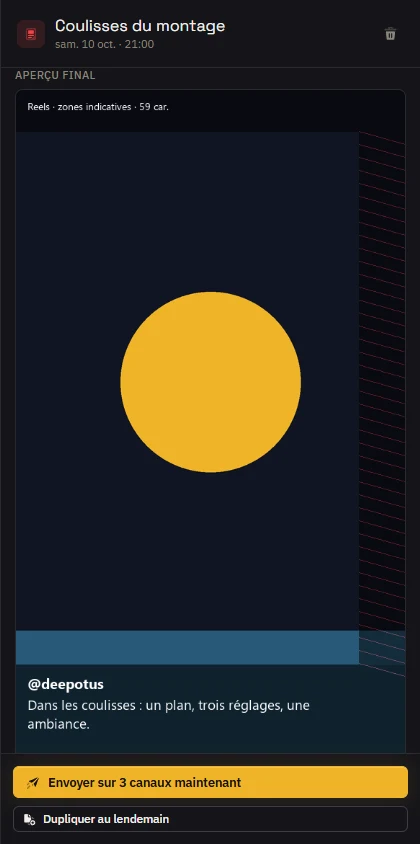
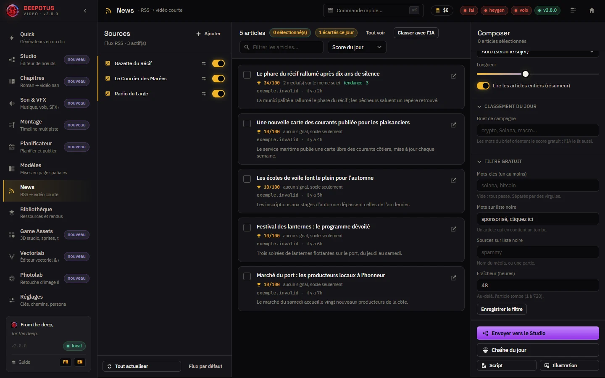

Tout ce que vous pouvez faire avec l'application, une tâche à la fois : des étapes courtes, des images animées tirées de l'application, et les icônes que vous verrez à l'écran.
Vous saurez vous repérer dans l'application, aller d'un écran à l'autre sans chercher, et lire ce que la barre du haut vous dit. Cinq minutes, gratuit.
Deepotus Video Gen est un studio qui tourne sur votre ordinateur. Il transforme une idée en vidéo, en image, en objet 3D ou en post publié. Vous branchez vos propres clés de fournisseurs d'IA : vous payez ces fournisseurs, pas l'application. Tout ce que vous créez reste chez vous.
1. Le rail : un écran par tâche 2. Ctrl+K : aller n'importe où au clavier 3. Dépenses du mois et état des clés, toujours visibles
Le rail des écrans à gauche, la barre du haut avec la commande rapide, le compteur de dépenses et l'état des clés.
Le rail, à gauche : un écran par tâche. Quick pour une vidéo en un clic, Studio pour composer, Montage pour monter, Bibliothèque pour retrouver vos médias, Réglages pour les clés. La flèche en haut du rail le replie en icônes seules.
La commande rapide : cliquez Commande rapide… ou appuyez sur Ctrl+K, tapez quelques lettres, Entrée.
Le compteur de dépenses montre ce que vous avez dépensé ce mois-ci chez vos fournisseurs. Un clic ouvre les Réglages.
Les pastillesfal, heygen et voix passent au vert quand la clé correspondante est posée. Un clic vous mène à la bonne clé.
La file des rendus, en haut à droite, liste ce qui se calcule et ce qui vient de finir, onglets En cours et Récents.
Ctrl+K ouvre la commande rapide : tapez quelques lettres pour aller à un écran ou lancer une action.
La commande rapide va à n'importe quel écran (Aller au Studio, Aller aux News…), ouvre le dernier rendu, crée un graphe de départ ou ouvre une section des Réglages. Revoir l'accueil relance la visite du premier lancement.
À l'installation, choisissez la langue : français ou anglais. Elle devient la langue de toute l'application.
Double-cliquez l'icône Deepotus Video Gen du Bureau. L'application démarre sans fenêtre noire, puis votre navigateur s'ouvre sur le studio.
Au tout premier lancement, un accueil en cinq étapes vous présente le studio, vous fait choisir un persona, vos fournisseurs de génération et les réseaux où vous publiez.
Posez au moins une clé, celle de fal.ai : elle fait les images et les clips vidéo. Le chapitre Brancher ses clés montre comment.
Réglages › Fournisseurs par défaut › Langue de l'interface : la page se recharge dans la langue choisie.
Ouvrez Réglages › Fournisseurs par défaut.
Dans Langue de l'interface, choisissez Français ou English. La page se recharge dans la langue choisie.
Sont traduits : la barre latérale, les Réglages, la Bibliothèque, Quick, News, le Planificateur, le Studio, les Modèles, les Épisodes, le Montage, Son & VFX, les sous-titres, le transfert et toutes les fenêtres de confirmation. Les listes envoyées par le serveur (effets, transitions, préréglages) arrivent elles aussi dans la langue choisie. Les labs (Vectorlab, Photolab, Card Forge…) sont traduits un par un ; en attendant, leurs textes connus sont traduits à l'affichage. Vos propres saisies ne sont jamais traduites.
1. Votre version est à jour 2. Vérifier demande la dernière version publiée
Le bloc version du Diagnostic : la version installée, son état, et le bouton pour vérifier tout de suite.
Une fois par jour, l'application regarde si une nouvelle version est publiée. Cela ne bloque jamais rien.
Quand il y en a une, une carte l'annonce : Télécharger récupère l'installeur et vous montre où il est rangé, Plus tard masque la carte pour cette version, Notes dit ce qui change.
Pour vérifier tout de suite : Réglages › Diagnostic, bouton Vérifier.
Fermez l'application, lancez l'installeur téléchargé : rien n'est installé tout seul.
Vous saurez poser la clé d'un fournisseur d'IA, choisir quel moteur sert à quoi, et protéger vos clés par un mot de passe. Dix minutes, gratuit ; les clés se créent chez chaque fournisseur.
Une clé d'API est un code que le fournisseur vous donne sur son site, dans votre compte. Elle autorise l'application à travailler pour vous ; c'est lui qui facture. Une seule est indispensable pour démarrer : fal.ai.
Dans Réglages › Fournisseurs par défaut, chaque rôle a son moteur : génération d'images, voix, image vers vidéo, avatar, voix off, résumé des News, planification des posts. Seules les clés réellement posées y sont proposées.
Modèle vidéo par défaut
Le modèle avec lequel naissent les nouveaux nœuds Seedance du Studio. Chaque nœud peut en changer.
Modèle de voix par défaut
Le modèle ElevenLabs des nouveaux nœuds de voix off.
IA locale avec Ollama
Installez Ollama, téléchargez un modèle, puis indiquez son nom dans la carte LLM local (Ollama) des Clés d'API.
Gemini : choisir la version
Le champ « Gemini — modèle » vide suit toujours la dernière version Flash ; remplissez-le pour en figer une.
1. Un mot de passe maître chiffre toutes vos clés 2. L'archive .dzk les emporte, avec son propre mot de passe
Réglages › Coffre : vos clés chiffrées par un mot de passe, et l'archive pour les emporter sur un autre poste.
Ouvrez Réglages › Coffre.
Choisissez un mot de passe maître (8 caractères au moins), tapez-le deux fois, puis Poser le coffre. Vos clés sont chiffrées et quittent le fichier en clair.
Fermer retire les clés de la mémoire : plus rien de payant ne part. Ouvrir les rend actives avec le mot de passe.
Retenir sur ce PC ouvre le coffre tout seul au lancement, pour votre session Windows ; Ne plus retenir redemande le mot de passe.
Sur chaque ligne de Clés d'API, une pastille dit où vit la clé : dans le fichier, dans le coffre, ou coffre fermé (un clic vous y mène).
Vous saurez ce que vous dépensez, fixer un plafond par mois et par moteur, et décider vous-même quand un rendu peut le dépasser. Cinq minutes, gratuit.
1. Un plafond pour chaque génération vidéo2. Au-delà d'un plafond, l'app vous demande avant de dépenser
Réglages › Tarifs et budget : vos tarifs, puis un plafond par moteur et la barre du dépensé ce mois-ci.
En haut de Tarifs et budget, saisissez les tarifs de vos fournisseurs (prix d'une image, d'une seconde de vidéo, d'un caractère de voix…). Les coûts affichés dans Quick, le Studio et le Planificateur deviennent justes. Enregistrer les tarifs.
Plafond vidéo par requête borne le coût d'une seule génération vidéo ; Secondes générées max par clip borne sa durée.
Plus bas, Plafonds du mois : un plafond global et un par moteur (fal, OpenAI, Anthropic, ElevenLabs, HeyGen, Meshy), en dollars. Une barre montre le dépensé.
Réglez Alerte à (% d'un plafond) : un bandeau vous prévient une fois par mois quand un plafond atteint ce seuil. Enregistrer les plafonds.
Avant de partir, chaque génération payante est comparée à vos plafonds. Si elle les dépasse, une fenêtre « Plafond de dépense mensuel » s'ouvre, où que vous soyez dans l'application :
« Tirer quand même » envoie exactement la même demande, une seule fois.
Sous les plafonds, le tableau Dépenses du mois — réel contre estimé donne une ligne par moteur et par écran : le nombre de tirs, ce qui était estimé, ce qui a été vraiment facturé, et l'écart.
Réel
Le fournisseur a donné le prix exact (Meshy, HeyGen) : c'est lui qui compte.
Réel partiel
Une partie des tirs a son prix exact, le reste est encore estimé.
Estimé
Le fournisseur ne donne pas de prix : l'application compte le devis fait au lancement.
Vous saurez trouver n'importe quel réglage, donner une voix à vos contenus avec les personas et habiller l'application à vos couleurs avec les kits de marque. Dix minutes, gratuit.
Un persona est une personnalité : son ton, son public, sa manière de parler. Le persona actif règle le scénariste des News, le ton du générateur de prompts et la voix off par défaut.
Ouvrez Réglages › Personas.
Les personas fournis se lisent mais ne se modifient pas : dupliquez-en un, ou cliquez Nouveau persona.
1. Créer un kit 2. Le kit actif habille toute l'application
Réglages › Identité visuelle : plusieurs kits de marque, un seul actif, et ses champs juste dessous.
Ouvrez Réglages › Identité visuelle. La liste des kits indique lequel est actif.
Nouveau kit en crée un ; Activer en fait le kit actif et rafraîchit l'application.
Les champs du dessous modifient le kit actif : Logo…, nom de l'app, sous-titre, deux lignes de slogan, couleur principale et couleur d'accent. Enregistrer l'identité.
Renommer, Dupliquer et Supprimer gèrent chaque kit. Le kit actif et le dernier kit ne se suppriment pas : le bouton grisé dit pourquoi.
Le kit actif habille l'écran d'accueil, la barre latérale, les accents de l'application et les rendus de Modèles qui utilisent la marque. Revenir à deepotus rétablit l'habillage d'origine.
Vous saurez emporter tout votre travail sur un autre ordinateur, vérifier que rien ne s'est abîmé en route, et y retrouver vos clés. Quinze minutes, gratuit ; il faut l'application installée sur les deux machines.
Le transfert emporte tout ce que l'application a créé : la Bibliothèque et l'origine de chaque fichier, les rendus, la bible, les plans de communication, les documents vectoriels, les séries de cartes et les modèles 3D. Vos clés d'API, elles, ne partent jamais dans le paquet.
Vous saurez relier votre téléphone au PC, emporter vos posts et vos chapitres dans la poche, et couper l'accès d'un téléphone perdu. Quinze minutes ; il faut l'application compagnon Deepotus sur le téléphone et le même Wi-Fi.
Par défaut, l'application n'écoute que ce PC : aucun autre appareil ne peut l'atteindre. Pour l'ouvrir au Wi-Fi de la maison, remplacez HOST=127.0.0.1 par HOST=0.0.0.0 dans le fichier .env du dossier de données, puis relancez l'application. Windows demandera d'autoriser Python dans le pare-feu.
1. Par défaut, seul ce PC atteint l'application 2. Affiche un QR valable 5 minutes
Réglages › Appareils : l'état du réseau, la liste des appareils, et l'appairage par QR.
Ouvrez Réglages › Appareils. La mention ce PC seulement ou réseau local ouvert dit si le téléphone pourra vous joindre.
Cliquez Appairer un appareil : un QR s'affiche, valable cinq minutes, pour un seul appareil.
Dans l'application du téléphone, ouvrez Appairer et scannez le QR. Il se ferme tout seul une fois lu.
Pour donner vos clés au téléphone, exportez l'archive chiffrée du Coffre et ouvrez-la dans l'application du téléphone, avec son mot de passe.
Cinq appareils au plus. Un téléphone appairé lit ce que le PC produit ; il ne voit jamais vos clés. Il n'écrit sur le PC que pour lui déposer des images et pour Avatar live, dont les dépenses passent par vos plafonds.
Tant qu'un chapitre est sur le téléphone, il est en lecture seule sur le PC, avec un bandeau. Vous pouvez le reprendre de force sur le PC. Si les deux versions se contredisent, le texte du téléphone reste au journal, à copier ou à reprendre : rien n'est perdu.
Vous saurez sortir une vidéo verticale en quelques minutes : un clip animé à partir d'une image, un avatar qui dit votre texte, les deux ensemble, ou une voix off. Payant selon le fournisseur ; le coût s'affiche avant de cliquer.
Quick a quatre onglets : Seedance (clip animé), HeyGen (avatar qui parle), Composition (avatar et clip ensemble) et Voix off. Un onglet reste grisé tant que la clé de son fournisseur manque : fal.ai pour Seedance, HeyGen pour l'avatar (chapitre Brancher ses clés). La voix off peut aussi tourner gratuitement sur votre PC avec Voicebox.
1. Glissez l'image à animer2. Modèle, durée et format 3. Le coût s'affiche avant de cliquer
Quick, onglet Seedance : l'image de départ, les paramètres, le coût estimé, puis Générer.
Ouvrez Quick, onglet Seedance.
Choisissez l'image de départ : glissez-la sur la zone ou cliquez Parcourir les vignettes… pour la prendre dans la Bibliothèque. Une image de fin est facultative ; si le modèle choisi n'en accepte pas, le champ le dit et nomme les modèles qui l'acceptent.
Écrivez ce qui doit bouger, ou partez d'un gabarit de prompt, ou cliquez Ouvrir le générateur de prompts.
Dans Paramètres, réglez le modèle, la durée et le format (9:16 par défaut).
Lisez le coût estimé, puis cliquez le bouton Générer. Le rendu passe par la file de rendus, en haut à droite, et arrive dans la Bibliothèque.
1. Six curseurs, une phrase de caméra2. La Galerie montre chaque mouvement de caméra
Les curseurs de caméra deviennent une phrase ajoutée au prompt ; la Galerie montre les mouvements.
Dépliez Caméra (curseurs) : six curseurs (avancer, tourner, monter…) deviennent une phrase adaptée au modèle, ajoutée au prompt. Elle s'affiche avant le rendu.
Pour choisir à l'œil, cliquez Galerie : onze mouvements de caméra en trois styles, en petites animations calculées sur votre PC. C'est un aide-mémoire, pas une promesse de ce que fera le modèle.
Onglet HeyGen : choisissez un avatar et sa voix. Les listes s'affichent tout de suite, depuis une copie gardée sur votre PC et rafraîchie en fond.
Pour un avatar à votre image, importez une photo : elle devient un avatar qui parle, choisi automatiquement.
Écrivez le script, puis générez. Les pauses de votre texte sont respectées.
Les vidéos passent par HeyGen et son moteur Avatar III, choisi selon l'avatar. Le solde HeyGen s'affiche en dollars. Comptez environ 0,24 $ la minute aux tarifs par défaut.
Un avatar et un clip dans la même vidéo, l'un après l'autre ou côte à côte (partage vertical ou horizontal).
Voix off
Choisissez le fournisseur à chaque génération : Voicebox, sur votre PC et gratuit, ou ElevenLabs. Un fournisseur absent est refusé, jamais remplacé en silence.
Musique sous la voix
Quand un rendu a une voix et une musique, la musique baisse toute seule sous la voix.
Sous-titres gravés
Sous-titrer le rendu : caler un texte que vous fournissez est gratuit ; la transcription automatique est payante et ne part que si vous la cochez.
Vous saurez composer une vidéo pièce par pièce en reliant des nœuds, la voir avant de payer, ne jamais repayer ce qui est déjà fait, et réutiliser un graphe comme une recette. Payant selon les nœuds ; le coût du graphe s'affiche avant de lancer.
1. Partez d'un graphe tout prêt 2. Aperçu : voir avant de payer 3. Exécuter : le coût affiché devient le plafond
La palette des nœuds, le graphe, l'inspecteur ; en haut, l'aperçu gratuit, le coût et Exécuter.
À gauche, la palette des nœuds (touche /) et les graphes de départ. Au centre, le graphe. À droite, l'inspecteur du nœud choisi, que l'on peut replier. En haut, la barre du graphe : Nouveau, Enregistrer, Recette, Importer, le format, Aperçu, le coût estimé et Exécuter.
Le rendu payé d'un nœud Seedance ou HeyGen est épinglé automatiquement : tant que sa demande ne change pas, il est réutilisé gratuitement, et le coût estimé dit quels nœuds le sont.
Les huit derniers rendus
L'inspecteur liste les derniers rendus du nœud ; Utiliser choisit celui qui alimente la suite.
Régénérer
Pour un nouveau tirage payant malgré l'épingle, demandez explicitement la régénération du nœud.
Vous saurez partir d'une mise en page toute prête, la retoucher (cases, masques, textes, animations), la décliner dans un autre format et l'habiller de votre marque. Gratuit ; seuls les rendus des cases générées par IA coûtent.
1. Ajouter texte, bandeau, marque, composant 2. Cliquez une case : glissez-la, redimensionnez-la 3. Enregistrer, puis ouvrir dans le Studio
Les cases sur la toile, et à droite les réglages de la case choisie : masque, échantillon, animation.
Cliquez une case sur la toile : glissez son corps pour la déplacer, ses poignées pour la redimensionner. L'inspecteur, à droite, montre ses réglages.
Masque donne une forme à une case image ou vidéo : arrondi, ellipse, polygone (triangle, losange, hexagone, étoile, ou vos propres points), fenêtres ajourées, bord adouci, liseré.
Animation fait entrer et sortir la case en fondu, glissement ou pop, avec durée, délai et courbe. Rejouer sur la toile la montre.
Ajouter pose un texte, un bandeau défilant, un séparateur, la marque, un badge ou un composant.
Enregistrer la mise en page, puis Ouvrir dans le Studio pour la remplir et la rendre.
Les modèles utilisent votre kit de marque : nom, couleurs, logo. Les kits se gèrent dans Réglages › Identité visuelle (chapitre Régler l'application). Un rendu garde le kit actif au moment de l'envoi, même si vous en changez pendant le calcul.
Enregistrer comme composant transforme des cases en groupe réutilisable ; chaque instance peut changer ses textes et couleurs, puis revenir au composant.
Échantillon d'aperçu
Une image de la Bibliothèque remplit une case pour les vignettes et l'export d'image ; jamais pour le rendu vidéo.
Exporter
Exporter l’image en PNG, JPEG ou WebP (elle entre dans la Bibliothèque), ou en SVG à glisser dans Figma.
Vers le Vectorlab
Ouvrir dans le Vectorlab ouvre la mise en page comme document vectoriel modifiable.
Depuis Figma
Importer un cadre Figma… en fait un modèle modifiable ; le nombre d'appels Figma est annoncé avant (clé Figma requise).
Avatar au bon format
Un avatar HeyGen est généré au format le plus proche de sa case : ni bande vide, ni tête coupée.
Vous saurez transformer un texte, un chapitre ou un roman en vidéo narrée et illustrée, scène par scène, et préparer son storyboard avant de payer le moindre rendu. Gratuit jusqu'à la narration et aux images ; leur coût s'affiche avant.
1. Le flux d'origine : du texte à l'épisode narré 2. L'Atelier : manuscrit, bible, storyboard
Chapitres propose le flux d'origine (Épisodes) ou l'Atelier Chapitre complet.
Ouvrez Chapitres dans le rail. Le flux d'origine (Épisodes) va droit du texte à la vidéo narrée en quatre étapes. L'Atelier Chapitre est l'espace complet : manuscrit, bible des personnages et des lieux, scénario, storyboard, animatique.
1. Quatre étapes, de gauche à droite 2. Collez le texte ou importez un fichier 3. La voix lit tout le chapitre
Épisodes : script et voix, scènes, illustrations, assemblage.
Script et voix : donnez un titre, collez le texte ou importez un .txt, .docx ou .pdf. Choisissez la voix et la langue, puis Générer la narration : tout le chapitre est lu et rangé dans la Bibliothèque audio.
Scènes : découpez le texte par paragraphe (mot pour mot) ou par l'IA (en temps forts visuels, avec un prompt d'illustration). Retouchez, réordonnez, ajoutez ou retirez des scènes.
Illustrations : une image par scène, avec le modèle de votre choix. Pour chaque scène, choisissez l'animation : lent travelling (Ken Burns), vrai clip Seedance ou image fixe.
Assemblage et export : un devis dit le prix des scènes Seedance, puis l'épisode est monté sur sa narration. Si une scène Seedance échoue, elle repasse en travelling et c'est signalé.
En haut, Nouveau, Ouvrir et Enregistrer gèrent vos épisodes ; un point signale ce qui n'est pas enregistré. Narrer les scènes ne repaie jamais une scène déjà narrée avec le même texte, la même voix et la même langue.
1. Trois modes : script, scénario, storyboard 2. La bible : personnages, lieux, objets…3. Le storyboard, puis l'animatique gratuite
Le texte du chapitre au centre, la bible à droite ; Script, Scénario et Storyboard en haut.
Script : écrivez ou importez le texte du chapitre ; Manuscrit importe un roman entier, découpé en chapitres, et remplit la bible. Les noms reconnus sont surlignés.
Bible, à droite : personnages, lieux, objets, dates, ambiances, décors. Chaque fiche a sa description, sa planche d'images et, pour un personnage, sa voix et son tempérament.
Scénario : Adapter (IA) réécrit le chapitre en scénario sans toucher au manuscrit ; Voice-over fait lire chaque scène par la voix de son personnage.
Storyboard : Découper (IA) ou Paragraphes crée les plans, avec leur cadrage, leur caméra, leur durée et les entités qui y figurent.
Animatique monte les plans en vidéo de répétition, muette et gratuite, à regarder avant de payer un rendu. Elle part ensuite dans un nouveau projet de Montage, en film entier ou en reel de 30 s.
Vous saurez générer une musique, des bruitages et une voix off que vous dirigez, ranger et retrouver vos sons, et poser des effets visuels gratuits. Le prix de chaque générateur est affiché ; les effets visuels et le post-traitement sont gratuits.
1. Musique, bruitages, voix, particules, post : le prix est dit 2. Diriger le jeu de la voix
Les générateurs en haut ; voix off dirigée, effets sonores et post-traitement dessous.
Ouvrez Son & VFX dans le rail. En haut, les générateurs et leur prix : musique, bruitages (606 sons livrés, plus la génération sur description), voix off, particules et post-traitement. Dessous, trois onglets : Audio, VFX particules et Post-traitement.
Cliquez des balises d'émotion ou de jeu (quatre au plus) : elles se posent en tête et le modèle Eleven v3 les joue. L'écran montre exactement ce qui part au modèle.
Générer la voix. Rognez, ajoutez un fondu, baissez la musique sous la voix ou normalisez, puis Envoyer au montage.
Hors du modèle v3, ou avec Voicebox, les balises sont retirées et c'est dit.
Instrumentale ou chantée : décrivez le style, écrivez les paroles section par section (un squelette est proposé selon le persona). Facturée à la seconde, sous vos plafonds.
Bruitages
Décrivez le son et sa durée : deux variantes à écouter, qui rejoignent la Bibliothèque et le tiroir Sons du Montage.
Mix voix et musique
Mixe une voix et une musique en baissant la musique sous la voix ; le mix entre dans la Bibliothèque.
La voix d'un personnage
Dans l'Atelier, un personnage reçoit une voix clonée (payante) et un tempérament, joués à chacune de ses répliques.
1. Tous les sons, puis par sorte : SFX, voix, musique 2. Chaque son : écouter, taguer, améliorer, séparer
Bibliothèque, puce Audio : le tiroir Sons, avec sa recherche, ses filtres et ses actions.
Tous vos sons vivent dans le tiroir Sons : dans la Bibliothèque (onglet Audio) et dans le Montage (touche B). Filtrez par sorte (bruitages, voix, musique, importés), entre vos sons et le catalogue fourni, cherchez par nom ou par tag.
Améliorer
Égaliseur, débruitage, compresseur et volume normalisé en un clic, sur votre PC, sans fournisseur.
Séparer en pistes
Découpe une musique en voix, batterie, basse… (payant, devis au premier clic) ; chaque piste reste rattachée à sa mère.
Isoler la voix
Retire le fond sonore d'une prise de voix (payant, devis au premier clic).
Chercher par description
Décrivez ce que vous voulez entendre ; les sons voisins d'un son se listent aussi. Demande le service local de recherche, sinon le bouton dit pourquoi il est grisé.
Pré-écoute
Survolez un son pour l'entendre (option à activer) ; Espace écoute la ligne choisie.
VFX particules : explosions, fumée, étincelles, magie… simulées sur votre PC, à poser sur un plan.
Post-traitement : grain 16 mm, halo lumineux, glitch, aberration ; appliqués au rendu par le nœud Rendu du Studio.
Dans le rack d'effets du Montage, un effet peut passer derrière le sujet détouré du plan, ou devant lui. Le détourage du sujet est payant ; un premier clic donne le devis.
Vous saurez créer un Personnage à partir de quelques photos, faire rejouer une vidéo par ce Personnage dans un autre décor, et vous filmer à la webcam transformé en direct, avec sa voix. Vingt minutes. Tout est payant à la seconde : le prix s'affiche avant chaque lancement et compte dans vos plafonds.
L'écran Avatar live s'ouvre depuis le rail. Il demande des clés selon ce que vous faites : fal pour le Recast et le décor, Decart pour le Direct, ElevenLabs pour la voix du Personnage. La voix locale, gratuite, demande une carte graphique NVIDIA et Voixbox (voir Installer et entraîner une voix locale RVC).
Ne clonez que votre visage et votre voix, ou ceux d'une personne qui vous a donné son accord. L'application vous le fait confirmer à chaque Personnage et garde la date.
1. Chaque modèle affiche son prix à la seconde 2. Un décor tout prêt, ou votre consigne 3. Le devis d'abord, puis le lancement
Recast : une vidéo source, un modèle et son prix, le Personnage, le décor ; le devis s'affiche avant de lancer.
Une vidéo de 3 à 30 s garde son jeu d'acteur ; le Personnage, le décor ou un élément change. Le rendu prend quelques minutes et rejoint vos rendus.
Onglet Recast : déposez la vidéo source, ou prenez un rendu de l'application.
Choisissez le Modèle : son prix à la seconde est affiché à côté.
Choisissez le Personnage, puis un décor parmi les Préréglages ou une consigne libre (en anglais de préférence).
Cochez la voix du Personnage si vous voulez que la voix de la prise soit convertie dans la sienne, au même rythme.
Lisez le devis sous le bouton, puis Lancer le Recast.
Pour essayer à moitié prix, cliquez Brouillon 480p : s'il vous plaît, « Finaliser en 720p » sur sa carte relance le même Recast avec la même graine. Le rendu final est très proche du brouillon, sans lui être identique. Les modèles de transfert de mouvement n'ont pas de brouillon.
1. Le décor, changeable en plein direct 2. Votre voix, celle du Personnage, ou une voix RVC locale 3. Le prix réservé est dit avant de démarrer
Direct : Personnage, décor, format, durée réservée et voix envoyée ; le prix réservé s'affiche avant de démarrer.
Onglet Direct : la première fois, collez votre clé Decart et cliquez Enregistrer la clé. Elle part au coffre ; la page ne la voit jamais.
Choisissez le Personnage (ou gardez votre visage), un Décor, le Format et la Durée réservée.
Choisissez la Voix envoyée : la vôtre telle quelle, celle du Personnage par ElevenLabs (environ 2 s de retard), ou une voix RVC locale (moins d'une seconde).
Démarrer le direct. L'image transformée s'affiche à côté de votre webcam ; changez de décor en cours de route avec Appliquer le décor.
Enregistrer le direct garde la séquence dans vos rendus, prête pour le Montage ou un Recast.
Quand une voix est convertie, l'image est retardée d'autant que la voix : les lèvres et le son arrivent ensemble. La barre du direct affiche les segments convertis, la latence et les pertes.
Le sujet de la vidéo est détouré puis posé sur une couleur, une image de la Bibliothèque ou une vidéo. Vérifier le détourage montre d'abord une image sur le nouveau fond ; la vidéo ne part qu'ensuite.
Changer seulement la voix
Garde l'image d'une vidéo et remplace sa voix par celle du Personnage. Facturé au caractère équivalent ElevenLabs.
Dans le Studio
Les nœuds Recast et de conversion de voix se branchent sur un rendu existant ou une vidéo UGC. Le devis du graphe compte leur prix avant Exécuter ; le nœud Recast a aussi son brouillon 480p.
Sur le téléphone
L'application compagnon lance un Recast (brouillon 480p compris, puis sa version finale), filme une prise ou ouvre un Direct, aux prix du PC et sous les mêmes plafonds.
Vous saurez installer Voixbox, enregistrer votre voix, l'entraîner avec RVC et la faire parler pendant un Direct, sur votre carte graphique. Gratuit : rien ne part sur Internet. Comptez trente minutes d'installation, un quart d'heure d'enregistrement et environ une heure de calcul par voix.
Il faut une carte graphique NVIDIA avec 6 Go de mémoire ou plus, et environ 6 Go de disque. Sans elle, le Direct propose votre voix telle quelle ou la voix du Personnage par ElevenLabs (payante, sans installation).
Le moteur est RVC (licence MIT), par sa WebUI officielle : la même installation sert à entraîner une voix et à la faire parler. Ne clonez que votre voix, ou celle d'une personne qui vous a donné son accord.
Lancez powershell -ExecutionPolicy Bypass -File tools\voixbox\webui.ps1. La WebUI s'ouvre en français sur http://127.0.0.1:7865 ; laissez la fenêtre PowerShell ouverte.
Onglet « Entraîner », étape 1 : un nom d'expérience court sans espace ni accent (oli), taux 40k, guidage de la hauteur Oui, version v2.
Étape 2 : le dossier de vos enregistrements, et l'algorithme de hauteur rmvpe.
Étape 3 : sauvegarde toutes les 25 époques, 200 époques au total (100 pour un essai), batch 8 (ou 4 avec 6 Go), petit modèle final à chaque sauvegarde : Oui.
Cliquez « Entraînement en un clic ». Comptez environ 1 h 15 pour 200 époques sur une RTX 2080 Ti.
Rangez la voix là où Voixbox la cherche : powershell -ExecutionPolicy Bypass -File tools\voixbox\ranger-voix.ps1 -Nom oli.
Avant de vous en servir, écoutez-la : onglet « Inférence du modèle » de la WebUI, choisissez oli.pth et donnez un court enregistrement. Une voix qui grésille demande plus d'époques ou un enregistrement plus propre.
Vous saurez poser vos plans sur une timeline, les couper, les déplacer et les enchaîner, avec les gestes d'un logiciel de montage professionnel. Gratuit : le montage et les aperçus tournent sur votre PC.
1. Les plans sur V1, leur son sur A1 juste dessous 2. Preview : un aperçu 480p gratuit 3. Trois vues : Médias, Montage, Livraison
La timeline en bas (vidéo, son, sous-titres), le lecteur au centre, l'inspecteur à droite ; Preview, Rendre et Publier en haut.
En bas, la timeline : titres (T1), incrustations (V2), vidéo principale (V1), puis dialogue (A1), musique (A2), bruitages (A3) et sous-titres (S1). Au centre, le lecteur ; à droite, l'inspecteur du plan choisi. En haut, Preview (aperçu 480p gratuit), Rendre et Publier. La barre basse bascule entre trois vues : Médias, Montage et Livraison.
Ouvrez le tiroir médias : tous vos rendus vidéo terminés, avec vignette, durée et origine. Filtrez par origine (Studio, Chapitres, Quick…), par titre ou par note (trois étoiles et plus).
Cliquez un média pour le poser à la tête de lecture. Le mode d'édition décide comment : écraser, insérer en poussant la suite, en fin, au-dessus, écraser en ripple, ou remplir la plage.
Depuis la Bibliothèque, Envoyer vers › Montage pose aussi une vidéo sur V1 avec son son sur A1. Un rendu du Studio ou un épisode de Chapitres s'ouvre directement dans le Montage.
1. Cliquez le losange entre deux plans2. Choisissez la transition et sa durée
Un clic sur le losange entre deux plans ouvre la galerie des transitions et le réglage image par image.
Cliquez le losange entre deux plans : la galerie s'ouvre, avec 58 transitions rangées par familles (fondus, glissements, volets, zooms, pixels, formes).
Le même panneau montre la dernière image du plan de gauche et la première de droite ; décalez la coupe image par image.
Pour un fondu rapide sur le plan choisi : Alt+T. Les fondus simples se voient en direct ; les autres après une Preview.
Le menu ☰ range toutes les actions en six rubriques, chacune avec son raccourci.
Le menu range toutes les actions en six rubriques, avec leur raccourci. Projets… ouvre la grille de vos projets : ouvrir, dupliquer, renommer, supprimer, ou comparer deux versions. Avant d'en ouvrir un autre, un montage sans nom est mis à l'abri automatiquement.
Nouveau montage
Un projet vide, avec ses pistes par défaut, sans rien d'autre.
Copier entre projets
Ctrl+C sur un clip, Ctrl+V dans un autre projet.
Auto-clips
D'une longue vidéo, l'IA propose de 1 à 8 extraits de 15 à 60 s, puis crée un projet avec celui choisi (payant ; une version gratuite sans IA existe).
Vos raccourcis
Le panneau ? liste les raccourcis ; un preset « Resolve » les aligne sur DaVinci Resolve. Exportez-les et réimportez-les.
Vous saurez donner à vos plans une couleur cohérente, les vérifier aux scopes, régler leur vitesse et leur cadre, ajouter des titres et soigner le son. Gratuit : tout se calcule sur votre PC, sauf la transcription et la traduction des sous-titres.
Forme d'onde, vectorscope et histogramme de l'image étalonnée, dans une fenêtre qu'on déplace.
Scopes ouvre une fenêtre déplaçable : forme d'onde, vectorscope et histogramme de l'image étalonnée sous la tête, recalculés à l'arrêt. Ils tiennent compte de la vitesse, de la stabilisation et de la cadence du rendu, et restent disponibles en plein écran.
Débruitage, anti-scintillement, anti-banding, netteté, incrustation sur fond vert, monochrome, teinte et saturation par bande, traînée, distorsion d'objectif.
Vitesse et rampe
De 25 à 400 %. L'interpolation adoucit le mouvement ; Diviser à la tête donne une autre vitesse à la suite du plan.
Stabiliser et recadrer
La stabilisation analyse un plan tremblé ; le cadrage choisit la partie gardée : centrée, qui suit le mouvement, ou manuelle ; le zoom dynamique anime un recadrage.
Clip d'ajustement
Sur la piste J1 (Maj+J), ses effets s'appliquent à tout ce qui est dessous, avec fondus d'entrée et de sortie.
Incrustations
Position, échelle, rotation et opacité animées par points, coins arrondis, ombre portée.
Rampes à la main
Une rampe d'effet peut suivre une courbe de Bézier que vous dessinez ; celle du tremblement fait monter ou descendre son amplitude.
Maj+T pose un carton de titre sur la piste T1, gravé au rendu.
Choisissez son gabarit (plein cadre, tiers inférieur, légende, compteur, chapitre, citation, hashtag, appel à l'action), son texte, sa couleur et sa police.
Les sous-titres ont une piste par langue : une seule est gravée, les autres s'exportent. La traduction peut créer une nouvelle piste de langue.
Vous saurez sortir votre montage au bon format, au bon volume sonore, et l'envoyer au Planificateur ou dans un autre logiciel. Gratuit : le rendu se fait sur votre PC.
1. Choisissez le preset, puis rendez ou mettez en file
Rendre… ouvre le panneau de rendu : preset de sortie, cadence, loudness, plage, file de rendus.
Cliquez Rendre dans la barre du haut : le panneau de rendu s'ouvre.
Choisissez le preset : master 1080, web 4K, réseaux 720, ProRes 422, H.265, WebM, audio seul (AAC, MP3, WAV) ou GIF 480. Le format du projet est gardé.
Réglez la cadence (24, 25, 30 ou 60 images/s) et la loudness : −14 LUFS pour YouTube et TikTok, −16 pour un podcast, −23 pour la diffusion. Une pastille compare la dernière mesure à la cible.
Rendre lance le rendu ; Ajouter à la file le met en attente derrière les autres. Pour ne sortir que la plage I/O, cochez la case prévue.
À la fin, un bandeau propose d'envoyer la vidéo au Planificateur, avec vos canaux, une date et une légende pré-remplie. Rien n'est publié sans vous.
La barre basse › Livraison liste les rendus et les aperçus du projet, leur état (en file, en cours, terminé, échec), et mène à la Bibliothèque. Publier renvoie le dernier rendu final au Planificateur.
Vous saurez remplir votre semaine de posts, les relire, les valider d'un coup et les laisser partir à l'heure sur Telegram, X, YouTube, Instagram et TikTok. Le Planificateur est gratuit ; seul ce que vous produisez (image, clip, avatar) a un prix, affiché avant le tir.
Pour qu'un post parte seul, son réseau doit être connecté : voir Connecter ses comptes. Sans compte connecté, tout fonctionne quand même en mode assisté : le post est prêt à l'heure dite et vous cliquez sur Envoyer.
1. Remplissez la semaine d'un plan 2. Le graphe : rendu, légende, canaux 3. Rien ne part sans votre clic
Le calendrier en haut, le graphe du post choisi au centre, son inspecteur à droite.
Ouvrez Planificateur dans le rail. En haut, le calendrier en vue Semaine ou Mois. Cliquez un post : son graphe (rendu, légende, un nœud par canal) s'affiche au centre et son inspecteur à droite. L'écran tient dans la fenêtre de 1280 à 1600 px ; la barre d'outils passe à la ligne si besoin.
1. Générer un plan2. Décrivez la semaine en une phrase
Un brief, une date de début, le nombre de jours et de posts : le plan se relit avant d'entrer au calendrier.
Générer un plan : décrivez la semaine en une phrase, choisissez le nombre de jours, de posts par jour, la langue, la date de début et les canaux, puis Générer. Sans clé d'IA, le planificateur intégré fait le travail ; avec une clé Anthropic ou un modèle local Ollama, le plan est plus fin.
Relisez la proposition, puis Ajouter au calendrier. Les heures suivent vos créneaux par canal.
Vous avez déjà un planning écrit ? Onglet Importer un doc : un fichier .md, .txt, .docx ou .pdf devient des posts datés, semaines et thèmes conservés.
Pour un post isolé : Nouveau post, ou ajouter un post en bas d'un jour. Les épisodes de Chapitres arrivent ici en brouillon.
Dans l'inspecteur, réglez le jour et l'heure, cochez Programmé (décoché, le post reste brouillon), choisissez les canaux et écrivez la légende, identique sur tous les canaux, avec le compte de caractères. Produire avec la source choisie fabrique le visuel ou le clip prévu par le plan ; le rendu se fait en arrière-plan et sa miniature apparaît sur le nœud Rendu du graphe.

1. N'écrivez rien d'important sous les zones sombres
Pour un post vertical, l'aperçu assombrit les zones que l'interface du réseau recouvre.
L'aperçu final montre le post comme sur le réseau. Pour un Reel, un Short ou un TikTok, il assombrit les bandes haute et basse et le rail de droite que l'interface du réseau recouvre : n'y placez rien d'important.
1. Valider la semaine2. Un clic valide tout le lot
La validation par lot : les 7 prochains jours partent en automatique, un post sans média est laissé de côté.
Chaque post a un mode. Assisté (par défaut) : à l'heure dite, il passe en prêt et vous cliquez sur Envoyer. Auto (Publication auto à l'heure dite) : il part seul sur ses canaux connectés.
Valider la semaine puis Valider les 7 jours passe d'un coup en automatique les brouillons et posts programmés des 7 prochains jours. Un post sans média est laissé de côté et nommé ; modifier réellement un post validé le remet en attente.
Pour publier tout de suite : Envoyer maintenant sur le graphe, ou le bouton jaune de l'inspecteur qui compte les canaux.
Avant chaque envoi, le quota du réseau est vérifié (X 500 posts par mois, Instagram 100 par 24 h glissantes, YouTube 100 par jour, TikTok 15 par jour) ; un canal déjà publié n'est jamais republié.
1. Des heures séparées par des virgules 2. Ou laissez vos métriques proposer
Des heures locales par canal, appliquées par les plans générés.
Créneaux
Créneaux : des heures locales par canal, séparées par des virgules, puis Enregistrer. Proposer d'après mes métriques choisit l'heure au meilleur engagement, dès 5 posts mesurés.
Analytics
Vues, j'aime et engagement des 28 derniers jours par canal, par format et par semaine, avec le top 5. Les métriques sont relues chaque jour ; Rafraîchir maintenant en relit 10 posts.
Brief de campagne
Campagne › Brief de campagne : objectif, messages clés, rubriques fixes et termes interdits. Le prochain plan le suit ; les termes interdits sont retirés des légendes et des hashtags.
Séries récurrentes
Une règle (jours, heure, canaux, gabarit de légende avec {date}, {weekday}, {week}) : Créer la série, puis Poser 4 semaines. Ce sont des brouillons ; poser deux fois ne duplique rien.
Recyclage proposé
Vos posts les mieux mesurés, publiés depuis plus de trois semaines, reviennent avec une légende variée. Proposer demain pose un brouillon ; aucune IA payante n'est appelée.
Fil X
Suite (fil X) écrit la suite d'un post X : elle part deux minutes après et répond au message précédent, jamais avant lui.
Dupliquer, signer
Dupliquer au lendemain copie le post. Sous la légende, une rangée d'emojis et le Pack Telegram Premium insèrent vos étiquettes de marque, réglées dans Réglages.
Avec le téléphone
Les posts validés forment un lot que le téléphone appairé peut emporter. Un post confié au téléphone le dit dans l'inspecteur, avec « Reprendre sur le PC ».
Vous saurez brancher Telegram, X, YouTube, Instagram et TikTok pour que le Planificateur publie seul. Gratuit : il suffit des accès fournis par chaque réseau, enregistrés sur votre PC.
1. Collez l'ID et le secret, puis Enregistrer 2. Connecter ouvre la page de consentement
Réglages, Comptes connectés : un bloc par réseau, ses clés, son état en direct.
Ouvrez Réglages › Comptes connectés. Un bloc par réseau dit combien de clés sont posées et son état en direct : auto (le Planificateur publie seul), assisté (il prépare le post et vous cliquez sur Envoyer) ou non connecté.
Dépliez le bloc du réseau et lisez sa note : elle dit où obtenir les accès.
Collez chaque valeur et cliquez Enregistrer à côté. L'adaptateur est actif tout de suite, sans redémarrage.
Contrôlez avec Vérifier les identifiants (ou Envoyer un message de test pour Telegram).
Le plus simple, en cinq minutes. Créez un bot avec @BotFather, nommez-le administrateur du canal, collez le jeton du bot et l'ID du chat du canal.
X
Les quatre clés de developer.x.com (clé et secret d'API, jeton et secret d'accès). L'offre gratuite permet de publier, dans la limite de 500 posts par mois.
YouTube
Créez un client OAuth Google de type « Application de bureau », collez son ID et son secret, puis Connecter. Tant que le projet Google n'a pas passé l'audit, YouTube garde les Shorts en privé, et le Planificateur le dit.
Instagram
Un compte professionnel et un jeton de Page (EAA…) ou Instagram (IG…). Les Reels partent depuis votre PC, sans hébergement, dans la limite de 100 posts par 24 h glissantes.
TikTok
Une app TikTok for Developers (Login Kit, plateforme « Desktop ») : collez la clé et le secret client, puis Connecter. Sans audit, les envois sont privés et le compte doit l'être ; passez TIKTOK_AUDITED à true après l'audit.
1. Connexion par la page de consentement 2. Le quota de chaque réseau, vérifié avant l'envoi
Dans le Planificateur, Comptes montre les quotas du mois et connecte YouTube et TikTok.
Connecter ouvre la page de consentement du réseau dans un nouvel onglet : acceptez, revenez, l'état passe à connecté et le jeton de renouvellement s'enregistre seul. Le même geste existe dans le Planificateur : bouton Comptes, puis Connecter YouTube ou Connecter TikTok. Ce panneau montre aussi les quotas du mois de chaque réseau.
Vous saurez suivre vos flux d'actualité, laisser le classement gratuit trier les articles du jour, et passer de l'article au post programmé avec la chaîne du jour. Le tri, le filtre et la préparation sont gratuits ; l'IA et les reels illustrés sont payants, sur demande seulement.
1. Repris par trois médias : tendance 2. Les écartés du filtre, motifs au survol 3. Le score est gratuit ; l'IA, sur demande
Les flux à gauche, les articles classés au centre, le Composer à droite.
Ouvrez News dans le rail. À gauche, vos sources ; au centre, les articles classés ; à droite, le panneau Composer. Ce que vous avez coché, la requête, le tri, la voix, la longueur et le script sont retrouvés quand vous revenez sur l'écran.
Ajouter : collez l'adresse d'un flux RSS ou Atom. Flux par défaut remet le pack fourni (crypto, géopolitique, économie, politique).
L'interrupteur d'une source la met en pause sans la supprimer.
Tout actualiser relit tous les flux. L'écran le fait aussi seul, une fois par jour. Les reprises d'une même dépêche sont fusionnées en un seul article.
Par défaut, les articles sont triés par Score du jour, un score gratuit : mots de votre brief, reprises par d'autres médias, article lisible. Le motif et la note s'affichent sur chaque carte ; Plus récents trie par date.
Tendance
Un sujet repris par trois médias le même jour est marqué tendance, en vert sur la carte.
Déjà couvert
Un sujet proche d'un reel lancé ces 30 derniers jours est marqué en ambre, titre au survol, et descend dans le classement. Une source trop souvent utilisée descend aussi.
Écartés
La puce des écartés compte les articles retirés par le filtre ; survolez-la pour les motifs. Tout voir montre tout le classement, En tête seulement revient aux cinq premiers.
Classer avec l'IA
Classer avec l’IA reclasse le lot par un modèle de langage : payant, sous vos plafonds, et seulement quand vous cliquez.

1. Un mot banni écarte l'article 2. Enregistrer reclasse aussitôt
Mots-clés, listes noires et fraîcheur décident de ce qui entre dans le classement.
Dans le Composer, Brief de campagne dit ce qui compte aujourd'hui et oriente le score. Filtre gratuit règle les mots-clés (vide : tout passe), les mots et les sources sur liste noire et la fraîcheur en heures (1 à 720) ; Enregistrer le filtre reclasse aussitôt.
De l'article au post programmé : préparer gratuitement, polir si besoin, programmer.
Cliquez Chaîne du jour. Choisissez la forme du reel, le nombre d'articles et les canaux. Le coût de chaque forme s'affiche avant tout tir : les cartes animées sont gratuites, rendues sur votre PC ; l'illustration IA, les plans vidéo, l'avatar et la voix off sont payants.
Préparer (gratuit) assemble le lot sans aucun appel payant : articles classés, brouillon de script, légende terminée par ses sources (média, date, domaine), créneau du Planificateur.
Si besoin, Polir avec l’IA réécrit le script (payant). Si le plafond de dépense arrête le polissage, le brouillon est gardé.
Relisez le script, la légende et le créneau, puis Programmer le lot : le post arrive dans le Planificateur, avec son reel cartes rendu gratuitement. Rien n'est écrit ni dépensé avant ce clic.
Vous saurez retrouver n'importe quelle image, son ou rendu, le ranger dans un projet, l'envoyer vers l'écran qui en a besoin et faire le ménage sans rien perdre. Tout est gratuit et reste sur votre PC, sauf les légendes par un modèle vision (payantes, devis affiché).
1. Un onglet par sorte de média 2. Regardez un seul projet 3. Un clic sur un tag filtre la grille 4. Grille ou liste triable
Les onglets par sorte, le projet regardé, les puces de tags et de teinte, puis la grille.
Ouvrez Bibliothèque dans le rail. En haut, un onglet par sorte : Images, Rendus, 3D, Sprites, Audio, Favoris et Établi, où les versions d'un modèle sont rangées dans l'ordre de leur lignée. Tout ce que produit l'application arrive ici : générateurs, Photolab, Vectorlab, imports, téléphone.
Les puces de source disent d'où vient chaque asset (Générateur, Matières, Imports, mobile…). Un clic filtre.
Les puces de tags sont comptées ; « 3+ » garde les images notées trois et plus. Chaque image reçoit aussi sa couleur dominante : les puces de teinte (douze teintes et neutre) filtrent par couleur.
Le tri Plus récents ou par taille, puis Grille ou liste : la liste a dix colonnes triables (nom, source, taille, date, dimensions, tags, note, favori, licence, teinte) et une ligne ouvre la fiche.
Chaque vignette montre la taille et l'âge du fichier ; l'étoile pose le favori sans ouvrir la fiche, et les points rappellent la note.
1. Ouvrez une image2. Ses filles : recadrage, upscale… 3. Licence, auteur et lien 4. Commentaires de revue
Un clic sur une vignette ouvre sa fiche : note, tags, lignée, droits, fichier, usages et commentaires.
Un clic sur une vignette ouvre sa fiche. On y trouve, de haut en bas :
Note et tags
Une note de 0 à 5, distincte du favori, et des tags libres : tapez puis Ajouter. La recherche couvre les tags.
Mère et filles
Mère montre l'image d'origine et la relation (recadrage, upscale, retouche…) ; les filles s'affichent en vignettes cliquables.
Droits
Licence (proposée selon la source), auteur et lien, puis Enregistrer. Une licence inconnue est signalée en ambre : à vérifier avant de diffuser.
Fichier, recette, usages
Dimensions, poids, format, couleur dominante, source ; la recette du générateur (prompt, style, modèle, graine) ; et tous les usages : rendus, posts, bible, plans, projets.
Commentaires de revue
Écrivez puis Commenter (ou Entrée). Chaque commentaire a un statut cliquable : à revoir, validé, rejeté ; pour un son, l'instant mm:ss. Ils suivent l'asset renommé ou restauré.
Images semblables
≈ Images semblables montre les images visuellement proches, grâce au modèle CLIP installé sur votre PC.
Rejouer la recette régénère une image générée avec sa recette d'origine, graine comprise. C'est payant : le prix s'affiche et vous confirmez avant le tir ; la nouvelle image arrive en tête de liste.
1. Envoyer vers…2. Retoucher dans le Photolab 3. Ou la ranger dans un projet
Depuis la fiche, Envoyer vers… liste tous les écrans qui savent reprendre l'image, et les projets.
Dans la fiche, cliquez Envoyer vers….
Choisissez l'écran : Studio, Quick (image de départ), Template, Chapitre ou Atelier, Montage, Cardforge, Sprite Lab, Scheduler… Trois cibles sont propres aux images : le Photolab pour la retoucher, le Vectorlab qui crée un document neuf à sa taille, et le Tile Lab qui en fait la source d'une tuile.
Projet de la Bibliothèque… range l'asset dans un projet : ceux qui le contiennent déjà sont cochés (un clic le retire), et ＋ Nouveau projet… en crée un.
1. Le phare du récif : 4 assets 2. Tout ce qui sort s'y range 3. Le projet du compagnon mobile
Choisir un projet filtre tous les onglets ; sa barre le range, l'épingle au téléphone ou montre son état.
La liste Projet, en tête de l'écran, regarde un seul projet : tous les onglets ne montrent plus que ses assets. ＋ Nouveau projet en crée un ; un projet se renomme ou se supprime sans toucher à ses assets.
Projet actif
Ranger ici automatiquement : tout ce que vous produisez ensuite (images, rendus, 3D, sprites) s'y range. Le rappel reste affiché tant qu'il est actif, et un clic l'arrête.
Sur le téléphone
Épingler sur le téléphone : un seul projet est épinglé, et c'est lui que montre le compagnon mobile.
État du projet
Le bouton État classe ses assets en monté, publié, imprimé ou inutilisé.
1. Légendes, tags, prompts, commentaires 2. Payant : le devis s'affiche avant 3. CLIP : gratuit, sur votre PC
Recherche texte gratuite, légendes par un modèle vision (payant, devis affiché) ou CLIP local, par le sens.
Le bouton Recherche ouvre la barre de recherche, avec trois moteurs :
Texte : légendes, tags, prompts, recettes, commentaires et noms, sans tenir compte des accents ni des majuscules. Gratuit, immédiat.
Légendes : un modèle vision décrit les images qui n'en ont pas, pour mieux les retrouver. Payant : le devis s'affiche (les images sont envoyées à Google), le plafond est vérifié, puis le suivi compte les images faites.
CLIP : cherche par le sens (« un phare au coucher du soleil »). Installer CLIP télécharge une fois environ 177 Mo, puis l'index se fait et la recherche tourne sur votre PC, gratuitement, sans rien envoyer.
L'onglet Audio monte le tiroir Sons (tags, filtres, tri, actions) au-dessus de l'import : voir Son & VFX.
1. Un groupe de doublons exacts2. Rien n'est perdu avant de vider
Le Nettoyage montre le poids et les doublons exacts ; ce qu'on jette va à la corbeille, d'où on le restaure.
Supprimer une image, un son ou un rendu le met à la Corbeille, jamais plus loin.
Nettoyage montre le poids par sorte et les groupes de doublons exacts. Cocher les copies en trop garde la copie utilisée (ou la plus ancienne) ; les copies protégées (favori, usage, projet) restent grisées. Confirmez pour les mettre à la corbeille.
La Corbeille compte les éléments et leur poids, et signale ceux de plus de 30 jours. Restaurer remet l'asset à sa place avec ses projets ; si son nom a été repris, il prend un nom voisin et le dit.
Vider efface définitivement : les anciens, tout, ou un seul élément, toujours après confirmation.
Vous saurez ouvrir une image dans le Photolab, la sélectionner, la retoucher, la régler et la renvoyer vers la Bibliothèque ou un autre écran. Gratuit et sans connexion : chaque geste est calculé sur votre PC par le moteur photocraft fourni avec Deepotus, avec les mêmes pixels que l'application d'origine.
1. Une image de la Bibliothèque2. Choisissez-la3. Un onglet par document ouvert
L'accueil propose un nouveau document ou une image de la Bibliothèque ; un dépôt de fichier marche aussi.
Ouvrez Photolab dans la barre des applications, juste après le Vectorlab. Depuis la Bibliothèque, Envoyer vers… › Photolab ouvre directement l'image.
Sans document, l'accueil propose Nouveau… (Ctrl+N) et Ouvrir depuis la Bibliothèque… (Ctrl+O). Vous pouvez aussi glisser un fichier sur la zone de travail : il entre dans la Bibliothèque et s'ouvre.
Un nouveau document se choisit par catégorie (Photo, Film et vidéo, Mobile, Impression, Web) et préréglage : HDTV 1080p, 4K UHD, Instagram carré, Story 9:16, A4 300 ppi…
Chaque document a son onglet ; un point signale qu'il a changé. La barre d'état, en bas, donne le zoom, le mode et la profondeur (RVB · 8 bits), la taille en pixels et le nombre de calques.
L'écran suit la langue de Deepotus, français ou anglais : menus, outils, panneaux, dialogues et historique.
1. Baguette magique (W)2. Les autres outils du groupe
Un emplacement marqué d'un coin regroupe plusieurs outils : clic droit ou appui long pour choisir.
La barre d'outils, à gauche, a vingt emplacements. Un emplacement marqué d'un coin en regroupe plusieurs : clic droit ou appui long pour choisir. Chaque outil a sa lettre (V, M, L, W, C, I, J, B, S, Y, E, G, O, P, T, A, U, H, Z), et la même lettre passe à l'outil suivant du groupe. Le bandeau du haut montre les réglages de l'outil actif.
Sélectionner
Rectangle et ellipse (M), lasso et lasso polygonal (L), baguette magique, sélection rapide et sélection d'objet (W). Maj ajoute, Alt retire.
Recadrer et mesurer
Recadrage (C) : tracez le cadre, Entrée pour couper. La pipette (I) prélève une couleur ; la règle, le compteur et les notes sont au chapitre suivant.
Peindre
Pinceau, crayon et pinceau mélangeur (B), gomme et gomme d'arrière-plan (E), dégradé et pot de peinture (G). [ et ] règlent la taille, un chiffre l'opacité (4 puis 5 = 45 %).
Réparer
Correcteur de tache et correcteur (J), tampon de duplication (S, Alt+clic pour la source), pinceau d'historique (Y), densité, éponge, goutte, netteté et doigt (O).
Texte et formes
Texte (T) : clic pour une ligne, glisser pour un paragraphe. Plume (P), sélection de tracé (A), rectangle, ellipse, triangle, polygone, ligne et formes personnalisées (U).
Se déplacer
Main (H) ou Espace tenu ; zoom (Z) ou Ctrl+molette. Ctrl+0 adapte à l'écran, Ctrl+1 affiche à 100 %.
Les pastilles sous la barre d'outils portent les couleurs de premier plan et d'arrière-plan : X les échange, D remet le noir et blanc.
Sélection rectangulaire (M)Fais glisser sur l'image : un rectangle en pointillés entoure la partie que tu vas modifier.Baguette magique (W)Clique sur une couleur : toute la tache de cette couleur est choisie d'un coup.Recadrage (C)Trace un cadre sur l'image puis appuie sur Entrée : tout ce qui est hors du cadre disparaît.Pinceau (B)Fais glisser sur l'image : un trait de ta couleur se peint partout où tu passes.Tampon de duplication (S)Alt-clic sur ce que tu veux copier, puis peins ailleurs : le même morceau d'image réapparaît sous ton pinceau.
Le menu Sélection regroupe Tout sélectionner (Ctrl+A), désélectionner (Ctrl+D) et inverser (Ctrl+Maj+I). Le moteur sait aussi trouver le sujet, le ciel, une plage de couleurs ou la zone nette. Modifier › Bordure, Lisser, Étendre, Contracter et Adoucir retouchent le contour ; une sélection s'enregistre dans une couche et se recharge.
Sélectionner et masquer… (Alt+Ctrl+R) affine les bords difficiles, cheveux compris : sept vues (pelure d'oignon, sur noir, sur blanc…), rayon, lissage, contour progressif, décontamination des couleurs, puis sortie vers une sélection, un masque ou un nouveau calque.
Transformation libre (Ctrl+T) pose un cadre à huit poignées. Un coin met à l'échelle en gardant les proportions (Maj les libère), un bord étire sur un axe, l'extérieur fait tourner (Maj par 15°), Ctrl déforme ou incline. Le bandeau donne X, Y, largeur, hauteur, angle et interpolation ; Entrée valide. Édition › Transformation propose aussi rotations de 90° et 180° et symétries.
Le menu Édition contient enfin couper, copier, coller (dont coller sur place), remplir et contourner, le remplissage d'après le contenu, Estomper pour atténuer le dernier filtre, et la palette Rechercher (Ctrl+K) qui trouve n'importe quelle commande par son nom.
1. Image › Ajustements › Courbes…2. Cliquez pour poser un point3. L'aperçu suit chaque geste
Image › Ajustements › Courbes… : chaque point déplacé est recalculé par le moteur sur une copie, jusqu'à OK.
Ouvrez Image › Ajustements et choisissez un réglage : Niveaux (Ctrl+L), Courbes (Ctrl+M), Teinte/Saturation (Ctrl+U), Balance des couleurs, Noir et blanc, Exposition, Vibrance, Ombres/Hautes lumières…
Le dialogue montre un Aperçu calculé par le moteur sur une copie. Dans Courbes, un clic pose un point, glisser le déplace, double-clic le retire, par canal RVB, rouge, vert ou bleu.
OK applique et ajoute une étape à l'historique ; Annuler laisse l'image intacte.
Le menu Filtre suit le même principe : flou (dont la galerie de flous), netteté, bruit, déformation, pixelisation, rendu, styliser, ainsi que la Galerie de filtres… et ses 47 effets artistiques empilables. Dernier filtre se rejoue par Ctrl+Alt+F. Le menu Image donne aussi les corrections automatiques, la taille de l'image et du canevas, la rotation, et Image › Mode pour passer en niveaux de gris, CMJN, Lab, bichromie, couleurs indexées ou 16 bits.
Noir et blancUn clic pose un calque qui enlève les couleurs : ton image devient grise, et tu peux le retirer quand tu veux.
1. Dans la Bibliothèque, avec les calques 2. Vers le Vectorlab, le Tile Lab… 3. Le repli : l'application native
Le menu Fichier : enregistrer dans la Bibliothèque (avec les calques), exporter, ou envoyer vers un autre écran.
Enregistrer (Ctrl+S) range l'image en PNG dans la Bibliothèque, source « Photolab », avec un fichier de travail qui garde les calques. Ce n'est jamais un écrasement : chaque enregistrement est un nouveau fichier, relié à l'image d'origine dans sa fiche.
Rouverte depuis la Bibliothèque, une image du Photolab revient avec ses calques.
Enregistrer sous… exporte en PNG, JPG, WEBP, TIFF, PSD ou PCRAFT et le télécharge ; Enregistrer une copie… garde le document tel quel ; Exporter › Exportation rapide au format PNG sort l'image en un clic, selon vos préférences.
Envoyer vers… passe l'image à un autre écran, par la Bibliothèque.
Fermer (Ctrl+W), Tout fermer et Fermer les autres demandent confirmation pour un document modifié. Revenir à la version enregistrée (F12) relit le dernier enregistrement. Informations sur le fichier… tient titre, auteur, mots-clés et copyright.
Vous saurez travailler en calques non destructifs dans le Photolab : réglages, masques, styles et objets dynamiques, puis ranger l'écran à votre main avec les panneaux, les espaces de travail, les règles et les préférences. Tout est gratuit et calculé sur votre PC.
Chaque calque a son œil, sa vignette et son nom ; un double-clic sur le nom le renomme. Clic pour choisir, Ctrl+clic pour en ajouter, Maj+clic pour une plage. Glissez une ligne pour la placer au-dessus, en dessous ou dans un groupe. En haut du panneau : un champ pour filtrer par nom, le mode de fusion (27 modes), l'opacité, le fond et les verrous (pixels transparents, pixels, position, imbrication, tout).
Le pied du panneau crée un calque ou un groupe, lie les calques, ajoute un masque, duplique, fusionne vers le bas et supprime. Le menu Calque va plus loin : nouveau calque par copie (Ctrl+J), grouper, masque d'écrêtage (Ctrl+Alt+G), organiser, aligner et répartir, fusionner (Ctrl+E) ou aplatir, rastériser, détourage.
1. Noir et blanc2. Un calque de réglage, non destructif 3. Ses curseurs dans Propriétés
Onglet Ajustements : un clic pose un calque de réglage, modifiable à tout moment dans Propriétés.
Ouvrez l'onglet Ajustements, à côté de Propriétés.
Cliquez un réglage, par exemple Noir et blanc : un calque de réglage se pose au-dessus du calque actif. L'image en dessous n'est pas touchée.
Ses curseurs s'affichent dans Propriétés ; Courbes et Niveaux y ont leur propre éditeur. Revenez-y à tout moment en choisissant le calque.
Seize réglages existent ainsi (luminosité, niveaux, courbes, teinte, balance des couleurs, mélangeur de couches, mappage de dégradé…), ainsi que les calques de remplissage : couleur unie, dégradé ou motif.
Le bouton masque révèle la sélection (ou tout) ; Alt fait l'inverse. Sur la vignette du masque : Maj+clic le désactive, Alt+clic le montre seul, Ctrl+clic le charge en sélection.
Masque vectoriel
Sur un calque déjà masqué, le même bouton ajoute un masque vectoriel, ou Calque › Masque vectoriel d'après le tracé actif.
Style de calque
Ombre portée, lueurs, biseau, contour, satin, incrustations : un dialogue avec aperçu. Le style se copie, se colle ou s'efface ; le panneau Styles en donne de prêts (néon, chrome, or…).
Filtres dynamiques
Filtre › Convertir pour les filtres dynamiques : chaque filtre appliqué ensuite apparaît sous le calque, avec son œil ; double-cliquez pour rouvrir ses réglages, glissez pour changer l'ordre.
Un calque seul s'exporte : Calque › Exporter sous… (PNG, JPG ou WEBP, à l'échelle choisie, vers le téléchargement ou la Bibliothèque) ou l'exportation rapide en PNG.
Noir et blancUn clic pose un calque qui enlève les couleurs : ton image devient grise, et tu peux le retirer quand tu veux.
À droite, les panneaux sont rangés en groupes à onglets ; la colonne d'icônes du rail replie ou rouvre chaque groupe, et le menu Fenêtre coche ceux qui sont visibles.
Couleur et nuances
Couleur (F6) avec code hexadécimal, Nuancier (groupes personnels gardés par Deepotus), Dégradés et Motifs.
Historique et infos
Historique : un clic sur une étape y revient. Navigation, Histogramme par canal, Infos (F8) sous le pointeur, Couches et leurs raccourcis (Ctrl+2, Ctrl+3…).
Pinceaux
Pointes avec recherche, Paramètres de pinceau (F5), Source de duplication et Outils prédéfinis (ex. gomme douce 60 px).
Texte et tracés
Caractère, Paragraphe, Glyphes, styles de caractère et de paragraphe ; Tracés, Formes ; Compositions de calques pour passer d'un état à l'autre.
1. Sept espaces fournis2. Peinture : pinceaux et couleurs devant
Fenêtre › Espace de travail range panneaux et outils pour une tâche ; la disposition est retenue par espace.
Ouvrez Fenêtre › Espace de travail, ou la liste en haut à droite.
Choisissez parmi sept dispositions : Essentiel (par défaut), Base, Graphisme et web, Mouvement, Peinture, Photo, Pixel art. Panneaux et outils se rangent pour la tâche.
Ce que vous déplacez, repliez ou masquez est retenu pour cet espace. Réinitialiser le remet d'origine ; Verrouiller l'espace de travail arrête de mémoriser.
Nouvel espace de travail… enregistre votre disposition (jusqu'à vingt), gardée dans le dossier de données de Deepotus.
Espace de travailChoisis un espace dans la liste : les panneaux et les outils se rangent pour ce que tu veux faire.
Affichage › Règles (Ctrl+R) puis Afficher › Grille : glissez depuis une règle pour poser un repère.
Dans Affichage : Règles (Ctrl+R), Afficher › Grille (Ctrl+') et Repères (Ctrl+;). Glissez depuis une règle pour poser un repère ; l'outil Déplacement le bouge ou le retire en le sortant. Aimanter (Ctrl+Maj+;) cale sélections et calques sur les repères, la grille, les calques ou les bords du document. Extras (Ctrl+H) masque tout d'un coup.
Le même menu offre les zooms, la symétrie horizontale de la vue (le document ne change pas), l'aperçu pixel art aux pixels francs et les modes d'écran : F passe au suivant, Échap revient au mode standard.
Glissez pour mesurer distance et angle ; Alt depuis une extrémité fait un rapporteur. Redresser le calque met la ligne à l'horizontale.
Compteur (I)
Un clic pose une marque numérotée, Alt+clic la retire. Les mesures s'enregistrent au journal, exportable en CSV pour un tableur.
Note (I)
Une note datée, avec auteur et couleur, posée sur l'image ; le panneau Notes passe de l'une à l'autre. Fichier › Importer › Notes… les copie d'un autre document.
Tranches (C)
Découpez l'image pour le web, ou d'après les repères ; la sélection de tranche les déplace, les divise et règle leurs options (lien, texte de remplacement).
Édition › Préférences : dix-huit sections, gardées dans le dossier de données de Deepotus.
Édition › Préférences ouvre dix-huit sections, enregistrées dans le dossier de données de Deepotus : interface (fond de la toile, bordure du document, infobulles), outils, fichiers et exportation rapide, curseurs, transparence, unités et règles, repères et grille, texte. Quelques sections disent simplement ce que Deepotus gère à leur place (performances, disques de travail…). Le bouton de réinitialisation remet tout par défaut, après confirmation.
Raccourcis clavier
Changez le raccourci d'une commande ou la lettre d'un outil ; un conflit est nommé et retiré à l'autre commande. Résumer… télécharge la liste en page HTML.
Menus et préréglages
Masquez ou colorez des entrées de menu. Le gestionnaire de préréglages range pinceaux, formes et motifs ; ils s'exportent et se réimportent en .json.
Écran tactile
Touches de modification affiche Maj, Ctrl et Alt à l'écran : un clic vaut pour le geste suivant, un double clic tient la touche.
Vous saurez dessiner une affiche, un logo ou une planche en vectoriel dans le Vectorlab : formes, plume, texte, apparence, calques, symboles, puis l'envoyer vers les autres écrans. Gratuit, tout est calculé sur votre PC ; seule l'illustration par IA est payante, prix annoncé avant.
1. Ouvrez un document2. Deux personas : Vecteur et Pixel 3. Les outils, rangés par familles
L'accueil liste vos documents : un clic sur une carte l'ouvre ; Nouveau en crée un.
Ouvrez Vectorlab dans la barre des applications. L'accueil liste vos documents : un clic sur une carte l'ouvre. Choisissez un format (carré, 16:9, A4, carte à jouer…) puis Créer pour un document neuf.
Un document arrive aussi d'ailleurs : Envoyer vers… › Vectorlab depuis la Bibliothèque ou le Photolab, « Éditer cette face dans le Vectorlab » depuis le Card Forge, « Ouvrir dans le Vectorlab » depuis un gabarit de Templates.
En haut à gauche, deux pastilles : Vecteur pour dessiner, Pixel pour retoucher des pixels (voir le chapitre suivant). Chacune a ses outils et ses panneaux.
L'écran suit les codes d'Affinity : dix menus en haut (Fichier, Edition, Document, Texte, Vecteur, Pixel, Calque, Affichage, Fenêtre, Aide), une barre contextuelle qui montre la sélection et les réglages de l'outil courant, les outils à gauche, la pile de panneaux à onglets à droite et une barre d'état qui rappelle les gestes de l'outil. L'onglet du document affiche « nom @ zoom » et une étoile s'il n'est pas enregistré.
1. La famille Formes2. Rectangle, ellipse, ligne, forme paramétrique
Le triangle d'angle ou l'appui long ouvre la famille ; la lettre de l'outil le choisit au clavier.
Les outils sont rangés en familles : seul l'outil courant de chaque famille est visible. Le triangle d'angle ou l'appui long ouvre la famille, le clic droit ouvre les réglages de l'outil, la lettre le choisit au clavier.
Sélection (V)
Le cadre ne prend que les objets entièrement inclus (Alt : ceux qu'il touche). Maj contraint, Ctrl redimensionne depuis le centre, Alt+glisser copie, Ctrl+clic atteint un objet dans un groupe, Tab passe au suivant.
Plume (P) et Nœud (N)
Clic = nœud vif, glisser = nœud lisse, clic sur le premier nœud pour fermer. Quatre modes : Plume, Intelligent, Polygone, Ligne. L'outil Nœud tire les poignées, déforme un segment, ajoute (double-clic) ou supprime des nœuds.
Formes (R, E, L, F)
Rectangle, ellipse, ligne et formes paramétriques (polygone, étoile, engrenage, flèche, donut, spirale) réglables par poignées. Un simple clic pose une forme ; l'outil Coin (C) arrondit un coin.
Dessiner à main levée
Crayon (B) lissé, pinceau vectoriel (J) à profil plat, fuseau ou calligraphie, gomme (W), couteau (X) et constructeur de formes (S) qui combine ou retire des zones par clics.
Texte (T)
Glisser = texte au corps de la hauteur tirée ; clic sur une courbe = texte sur ce chemin ; double-clic pour éditer sur place. Le cadre de texte fait couler le texte et signale un débordement en rouge.
Pipette, mesure, vue
Pipette (I) avec loupe (Ctrl : tout le style), mesure (M), main (H), loupe (Z, Alt pour dézoomer). Ctrl+0 ajuste la page, Ctrl+1 affiche à 100 %.
1. Un clic sélectionne le soleil2. Fond, contour, dégradés, effets
Sélectionnez un objet : la barre contextuelle et l'onglet Apparence montrent son fond, son contour et son opacité.
Sélectionnez un objet. La barre contextuelle donne X, Y, L, H et l'opacité ; les champs acceptent des calculs (100/3).
L'onglet Apparence règle le fond et le contour depuis le nuancier, sans fond ou sans contour, l'épaisseur, l'opacité. Trait et Transformer ont leurs onglets (inclinaison, pivot déplaçable).
Apparence + va plus loin : dégradés linéaire, radial et conique, transparence, motifs (hachures, points, damier), contours multiples, six effets, 16 modes de fusion, couleurs globales, harmonies, styles d'objet, coller dans une forme (masque d'écrêtage), texte en cadre ou sur chemin.
ConiqueLa couleur tourne autour du milieu de ta forme, comme les rayons d'une roue.TransparenceTa forme s’efface doucement d’un côté à l’autre, comme si elle disparaissait dans le brouillard.MotifTa forme se remplit de petits traits répétés, comme un tissu rayé.En cadreTa longue ligne de texte rentre dans une boîte et passe à la ligne toute seule, comme dans un livre.Sur cheminTes mots se couchent sur la ligne que tu as tracée et la suivent partout où elle va.
Un contour décalé et un texte sur chemin restent vivants : ils se recalculent quand leur source change, jusqu'à ce que vous les détachiez.
Chaque calque se déplie en arbre de ses objets, avec vignette, verrou, œil, opacité et mode de fusion.
L'onglet Calques montre en tête l'opacité et le mode de fusion du calque, puis chaque calque avec sa vignette, son verrou et son œil ; un triangle le déplie en arbre de ses objets, écrêtages, masques et effets. Le menu Calque crée, renomme, groupe (Ctrl+G), verrouille, masque et range dans l'ordre.
Un symbole se crée par Vecteur › Créer un symbole ; ses instances suivent toutes ses modifications. Double-cliquez une instance pour l'éditer en place, puis Terminer ou Abandonner.
Le menu Document regroupe la Configuration… (taille, résolution, unité, fond), les Planches… exportables séparément, les Marges et fond perdu… (repères jamais exportés), la Grille du document… (carrée, iso, triangulaire, hexagonale, aimantante), le Plateau et terrains… pour peindre des tuiles (K) et la Carte réelle…. Affichage › Magnétisme aux objets aimante aux bords, centres et écarts réguliers.
Fichier › Insérer une image… ou Insérer depuis la Bibliothèque… pose une image ; l'onglet Stock montre la Bibliothèque avec recherche, un clic pose l'image. Une image se rogne, se verrouille et reçoit aussi les effets.
Vous saurez retoucher des pixels et faire du pixel-art dans le Vectorlab, exporter vos dessins dans le bon format, fabriquer une carte à partir de vraies données et transformer un dessin en pièces à imprimer en 3D. Tout est gratuit et calculé sur votre PC.
Même document, autres outils : sélections de pixels, pinceau, gomme, pot, crayon pixel, panneaux Pixel-art et Histogramme.
Cliquez la pastille Pixel (ou Affichage › Persona Pixel). Le même document garde ses calques ; les outils et les panneaux changent. Depuis le hub Game Assets, la carte Pixel ouvre directement ce persona.
Pour retoucher une image posée, choisissez-la puis Pixel › Éditer les pixels.
Sélectionnez les pixels : rectangle (M), lasso (L), baguette magique (W) ou par couleur ; le menu Pixel les fait croître, contracter ou s'inverser (Ctrl+I).
Peignez : pinceau (B) et gomme (E) avec rayon, dureté et forme ronde ou carrée, pot de peinture (G) contigu ou global, tampon de clonage (C), flou, éclaircir et assombrir. Clic droit = couleur secondaire, X les échange, Alt+clic prélève.
Pixel › Réglages et filtres… donne niveaux, courbes, teinte et saturation, noir et blanc, seuil et flou. Chaque retouche s'annule par Ctrl+Z, comme le reste du document. L'onglet Histogramme montre les quatre canaux de l'image éditée.
Le panneau Pixel-art règle la taille de tuile, la symétrie, la palette (les mêmes que le Sprite Lab et le Tile Lab), la quantification et la grille de pixels. Le crayon pixel (K) trace sans doubles pixels dans les diagonales ; Maj+clic trace un segment droit depuis le dernier point.
Calquer un modèle
Désigner comme modèle pâlit et fige une image avec sa grille ; un calque pixel se pose dessus pour dessiner case par case, la pipette prend la couleur exacte, moyenne ou dominante d'une cellule.
Pixeliser
Pixeliser ramène une image ou une sélection vectorielle à de gros pixels. Rasteriser y ajoute palette et tramage (ordonné ou Floyd-Steinberg).
Tuiles et raccord
L'aperçu 3×3 note le raccord d'une tuile ; la tuile iso 2:1 limite la peinture au losange, avec symétrie le long de ses bords.
Animation
La ligne de temps montre les cadres : lecture (Entrée), boucle, FPS, pelure d'oignon rouge (précédent) et bleue (suivant). Exportez en feuille PNG + JSON ou en bande.
Finitions
Contour sombre détache le dessin du fond, Accentuer renforce le contraste ; l'export PNG agrandit de ×1 à ×16 sans flou.
Vers les autres labs
Pixel › Pixel-art vers Tilelab… envoie le dessin au Tile Lab ; le panneau Pixel-art l'envoie aussi au Sprite Lab.
Désigner comme modèleTon image devient un modèle : elle pâlit, se fige, et une grille de cases se pose dessus pour te guider.Créer le calque pixelUne feuille transparente se pose sur ton image modèle : tu dessines dessus, case par case.Pixeliser l'imageTon image devient faite de gros carrés, comme des briques : autant de carrés que la taille de tuile.Contour sombreUn trait sombre entoure ton dessin pour qu'il se détache bien du fond.
Commun aux deux personas : formats, résolutions, tranches et préréglages d'impression.
Ouvrez l'onglet Exporter (Fichier › Exporter… ou Fenêtre › Exporter), commun aux deux personas.
Choisissez ce qui part : le document entier, chaque planche, chaque calque visible, chaque objet sélectionné, ou les tranches dessinées avec l'outil Tranche.
Choisissez le format (PNG, JPEG, WebP, SVG, PDF, DXF) et une ou plusieurs résolutions (@1x, @2x…). Les noms de fichiers se construisent seuls ; un export en lot sort toutes les tranches, résolutions et formats d'un coup.
PDF vectoriel
Par défaut : textes en contours, page à la taille physique, dégradés et motifs vectoriels, traits de coupe et fond perdu pour l'imprimeur. Un message dit ce qui a dû être rasterisé et pourquoi.
DXF pour la découpe
En millimètres, textes en contours de glyphes, symboles et groupes compris.
Exports rapides
Fichier › Exporter SVG (images incorporées), Exporter PNG 2×, et Vers la Bible… pour un chapitre.
Document › Carte réelle… : relief, courbes de niveau, fond OpenStreetMap et tracés GPX, sans clé ni coût.
Document › Carte réelle… ouvre le panneau Carte : sans clé ni coût, il pose un relief ombré, trace les courbes de niveau en chemins vectoriels au pas choisi, ajoute un fond OpenStreetMap avec son attribution, et découpe la carte en tuiles hexagonales colorées par altitude. Fichier › Importer un GPX… pose un tracé à l'échelle vraie, garde son altitude (profil, longueur, dénivelés) et peut en faire un ruban en relief.
CourbesDes lignes relient les endroits de même hauteur sur ta carte, comme les marches d’une montagne.DécouperTa carte se change en cases à six côtés, colorées selon la hauteur : eau, prairie, forêt, montagne.
1. Calques, tuiles, logo, relief ou pixel-art 2. L'aperçu 3D, en couleurs de pièces
Fichier › Impression 3D… transforme le dessin en pièces : aperçu 3D, puis STL, 3MF ou un lot par pièce.
Fichier › Impression 3D… (ou Texte › Logo 3D…). Choisissez le mode : calques (une hauteur par calque), tuiles de plateau avec socle, logo (biseau, évidement à mur minimal), relief de carte, ou pixel-art (une hauteur par couleur).
Réglez hauteurs et options, puis Aperçu 3D : le modèle tourne dans la visionneuse, chaque pièce dans sa couleur, avec dimensions, triangles et volume. Un modèle plus large que le plateau est signalé.
Un STL pour une seule pièce, ou Lot par tuile / dalle : un STL par pièce, plateau.3mf coloré et nomenclature.csv. Ouvrir le slicer passe la main à votre logiciel d'impression.
En mode relief, les dalles numérotées reçoivent des logements sous le socle et des clés séparées (jeu 0,2 mm) pour s'assembler. La dépouille des flancs incline les bords d'un logo pour le démoulage.
Dépouille des flancsLes côtés de ta pièce penchent : plus tu tournes, plus le bas devient large et le haut petit.
Vous saurez vous repérer dans le hub Game Assets, transformer une image en modèle 3D et ouvrir le bon outil 2D : Sprite Lab, Tile Lab, Pixel du Vectorlab ou Card Forge. Les labs 2D sont gratuits et tournent sur votre PC ; la génération 3D est payante, prix affiché avant.
1. Image → modèle 3D : prix affiché avant 2. L'onglet Assets 2D3. Quatre labs, chacun avec Ouvrir et Guide
Un onglet par outil : 3D, 3D Studio, Assets 2D, Sprites, Tuiles, Matières, Cartes. Assets 2D rassemble les quatre labs 2D.
Ouvrez Game Assets dans le rail. Un onglet par outil : 3D (image vers modèle 3D), 3D Studio (voir Image vers 3D), Assets 2D, Sprites 2D et Tuiles (les labs ouverts dans le hub), Matières (Material Forge) et Cartes (Card Forge).
Dans l'onglet 3D, choisissez une image source de la Bibliothèque : idéalement un personnage ou un objet bien détouré sur fond neutre.
Choisissez le moteur, du plus économique au plus soigné : TripoSR, Hunyuan3D, Tripo (par défaut, bon rapport qualité/prix), TRELLIS et Rodin. Seule la clé fal.ai est nécessaire.
Options : textures, T-pose pour un personnage à animer, multi-vues (quatre vues générées d'abord pour un modèle plus fidèle), et les formats : GLB toujours, plus FBX, OBJ, STL ou USDZ selon le moteur.
Le prix total s'affiche à côté de Generate 3D, avant le tir. Le pipeline montre ensuite chaque étape en direct ; le modèle tourne dans la visionneuse, chaque format et chaque vue se téléchargent.
Les modèles se retrouvent dans l'onglet 3D de la Bibliothèque ; l'Établi les prépare ensuite pour l'impression.
L'onglet Assets 2D rassemble quatre cartes, chacune avec Ouvrir et Guide :
Sprite Lab
Une image, une vidéo ou une planche devient une feuille de sprites animée, avec directions, squelette, hitboxes et exports moteur. Voir Animer des sprites.
Tile Lab
Tuiles sans raccord, jeux blob 47 ou 16, variantes, formes iso et hexagonales, cartes peintes, exports Tiled, LDtk et Godot. Voir Peindre des décors.
Pixel — Vectorlab
Ouvre le Vectorlab directement en persona Pixel : ligne de temps, tuile iso 2:1, rastériser une image. Voir Pixel art.
Card Forge
Cartes à jouer : gabarits imprimeur, dos et mire, langues, art en lot, livret. Voir Card Forge.
Le Sprite Lab, le Tile Lab et le persona Pixel du Vectorlab partagent la même liste de palettes : adaptative (N couleurs), PICO-8, Game Boy, NES, Sweetie 16, 1-bit, Grayscale 16 (seize gris) et Handheld 4 (quatre tons façon console portable). Une palette choisie donne le même rendu dans les trois outils. Le tramage (ordonné ou Floyd-Steinberg) adoucit les dégradés.
Pixel-art (9b)Ton dessin devient fait de gros carrés et de quelques couleurs seulement, comme dans un vieux jeu vidéo.
Vous saurez fabriquer une feuille de sprites animée dans le Sprite Lab : partir d'un effet livré, d'une planche, d'une vidéo ou d'un personnage de la bible, la découper, l'aligner, la pixeliser, puis l'exporter pour votre moteur de jeu. Presque tout est gratuit et local ; seuls l'animation d'une image et la génération par prompt sont payantes, prix affiché avant.
Ouvrez Sprite Lab depuis l'onglet Assets 2D du hub Game Assets. Trois colonnes : à gauche la source (Démarrer, Image, Render, Vidéo, Feuille, Bible, Prompt), au centre les frames extraites et les réglages, à droite la préviz animée et les exports.
1. Choisissez un effet2. La préviz joue l'animation 3. Exports pour Unity, Godot, Phaser, Aseprite, Unreal
L'onglet Démarrer livre douze effets de particules et des séquences : un clic produit la planche, le GIF et les exports, sans clé ni crédit.
Onglet Démarrer : douze effets de particules (explosion, fumée, étincelles, aura…) et des séquences animées, faits à partir de textures libres livrées avec l'app.
Un clic produit la planche, les images, le GIF et le pack Unity, sans clé, sans crédit, sans réseau.
La préviz joue l'animation : Espace lecture / pause, vitesse 0,5×, 1× ou 2×, fonds unis ou décors (Ciel, Extérieur, Donjon, Cave), et WASD ou les flèches font marcher le sprite. Le bouton miroir le retourne.
MiroirTon personnage se retourne et regarde de l'autre côté, comme dans un miroir.
1. Une planche de la Bibliothèque2. 4 × 2 cases détectées seules 3. Le héros sautille dans la préviz
Onglet Feuille : la grille se détecte, les cases se choisissent, les frames s'alignent ; tout en local.
Onglet Feuille : choisissez une planche de la Bibliothèque, ou Ouvrir un PNG de mon PC. Rien n'est envoyé, rien n'est dépensé.
Auto-détecter compte colonnes, lignes et cases occupées grâce à la transparence ; sinon, imposez la grille colonnes × lignes.
Glissez pour peindre la sélection des cases (Ctrl ajoute ou retire, Maj étend), ou Toutes, Aucune, une case sur 2, 3 ou 4.
Alignez : Pieds pose chaque personnage sur le même sol, Gauche / droite recale le centre, Les deux axes fait les deux ; les flèches poussent la frame courante d'un pixel, Remettre annule.
Rangez des plages sous un nom (marche, saut…) en boucle, ping-pong ou inversé, puis exportez la Planche alignée, son JSON, ou Copier le JSON.
Auto-détecterL'outil compte tout seul les images de ta planche et dessine une case autour de chacune.PiedsTous tes personnages posent les pieds à la même hauteur, comme s'ils étaient debout sur le même sol.
Une image de la Bibliothèque est animée sur fond uni (payant) ; un rendu ou une vidéo de votre PC est découpé en frames. Réglez l'échantillonnage, le nombre de frames et le détourage (cloud, local ou clé chroma).
Bible
4 directions (planche) découpe les vues sud, ouest, est, nord d'un personnage ; 8 directions (modèle 3D) rend son modèle sous huit angles. Gratuit.
Prompt
Décrivez un sprite, ajoutez d'un clic les mots de la persona, puis Générer les images : le coût s'affiche avant, les images sont détourées en local et deviennent la source.
Toute source accepte aussi de 1 à 64 images de la Bibliothèque, prises dans l'ordre comme frames.
Au centre : cellule (128, 256, 512 ou native, sans agrandissement), ancrage centré ou aux pieds, colonnes. Pixel-art (9b) réduit à la taille cible avec une palette partagée et un tramage. Animation : durée par image et tags (idle, run, jump…) écrits dans tous les exports. Post-traitement : contour, ombre portée, nettoyage des pixels orphelins, lissage des bords. Puis Générer le sheet.
ContourUn trait entoure ton personnage pour qu'il se voie bien sur n'importe quel fond.Ombre X / YUne ombre se pose derrière ton personnage, un peu décalée, comme si une lampe l'éclairait.
Réordonnez, dupliquez ou supprimez des images d'une feuille déjà faite, puis Appliquer ; les tags suivent. Rien n'est refait ni repayé.
Hitboxes
Dessinez par frame des rectangles hit (frappe) ou hurt (peut être touché), seize au plus ; réglez-les, copiez-les d'une frame à l'autre (Ctrl+C / Ctrl+V). Ils partent dans l'atlas JSON et le Paper2D.
Squelette Spine
Tracez des os puis des pièces, nommez-les, et Écrire le rig produit un squelette Spine 3.8 avec ses pièces.
Sous la préviz : Sheet PNG, ZIP (frames et pack Unity, avec tous les exports moteur), GIF, ressource Godot 4 (.tres), atlas JSON pour Phaser et PixiJS, fichier Aseprite (.ase) et feuille Unreal Paper2D. Save to Library range la feuille dans la Bibliothèque, d'où elle s'envoie vers le Vectorlab ou le Tile Lab.
Vous saurez fabriquer dans le Tile Lab des tuiles sans raccord, des jeux de tuiles auto-tuilables, des tuiles iso ou hexagonales, et peindre une petite carte prête pour Tiled, LDtk ou Godot. Tout est gratuit et calculé sur votre PC.
Ouvrez Tile Lab depuis l'onglet Assets 2D du hub Game Assets. Une barre de cinq modes : Seamless, Feuille de tuiles, Jeu, Formes et Peintre. À gauche, la source (images de la Bibliothèque) ; à droite, le résultat. Une image envoyée depuis la Bibliothèque ou le Photolab (« Tile Lab — source de la tuile ») arrive directement comme source.
1. Rendre seamless : gratuit, local2. La tuile et son pavage 3×3
Mode Seamless : une image devient une tuile qui se répète sans couture, avec son pavage 3×3 et le score de raccord.
Mode Seamless : choisissez une image (texture de sol, mur, feuillage…).
Méthode : décalage 50/50 avec fondu (naturel) ou miroir 2×2 (parfait, effet kaléidoscope) ; recadrage et taille ; pixel-art en option avec une palette partagée.
Rendre seamless montre la tuile, son pavage 3×3 et le score de raccord avant puis après (0 = parfait). La tuile rejoint la Bibliothèque.
MéthodeMiroir plie ta texture comme une feuille pliée en quatre : les bords se touchent toujours parfaitement.Rendre seamlessTa texture se raccorde : posée plein de fois côte à côte, on ne voit plus où chaque morceau finit.
1. A : terrain, B : fond 2. 142 tuiles, raccord mesuré
Mode Jeu : une matière de terrain et une de fond deviennent un jeu blob 47 ou 16, auto-tuilable et exportable.
Mode Jeu : cliquez une image pour la matière A (terrain) puis une seconde pour B (fond). La bascule Material Forge prend la couleur de base d'une matière du Material Forge.
Choisissez le jeu : Blob 47 (huit voisins, coins arrondis) ou Blob 16 (quatre arêtes, plus rapide), le côté en pixels, de 1 à 5 variantes par tuile et la graine.
Fabriquer le jeu construit l'atlas et mesure le raccord des voisines ; l'atlas est copié en Bibliothèque.
Nouvel aperçu tire une carte au hasard où chaque case reçoit la tuile de ses voisines ; Mesurer juge le raccord, la répétition visible et l'éclairage (ok / attention).
Exportez atlas.png puis le format de votre moteur : Tiled (.tsx), LDtk (.ldtk) ou Godot (.tres), à poser à côté de l'atlas.
JeuTu choisis combien de morceaux faire : beaucoup pour des coins bien ronds, ou seize pour aller vite.Nouvel aperçuUne nouvelle carte se dessine au hasard avec tes tuiles, pour voir si elles vont bien ensemble.
Le bloc « Style d'un lieu de la bible » compose un prompt de tuile tenu par la planche et la palette d'un lieu : Prompt du lieu, puis Copier le prompt pour le coller dans le générateur d'images. Rien n'est généré ici.
1. Cliquer-glisser pour peindre 2. La carte composée, prête pour le jeu
Mode Peintre : vous peignez le terrain case par case, et la bonne tuile du jeu est posée selon les voisines.
Mode Peintre, une fois un jeu fabriqué : réglez largeur, hauteur et graine, puis cliquez-glissez sur la grille pour peindre le terrain, repassez pour gommer. À chaque coup, la bonne tuile est posée d'après les voisines, et la carte composée s'affiche dessous avec carte.png et carte.json. Tout effacer vide la grille.
Une matière devient une tuile losange iso 2:1 ou hexagonale à sommet plat, qui pave sans couture. Fabriquer la tuile montre le pavage ; export vers Tiled et Godot.
Feuille de tuiles
Ouvrez une planche existante : Détecter trouve chaque tuile par sa transparence, la grille de placement (carrée ou iso 2:1) teste les raccords, double-clic = pavage ×9.
Exports de la feuille
Feuille alignée et JSON, tileset et JSON, ou Tuiles séparées (zip) ; la feuille alignée peut aussi rejoindre la Bibliothèque.
FormeTa tuile change de forme : un losange pour un jeu vu de biais, ou un hexagone à six côtés.Grille de placementTes cases deviennent des losanges, rangés en quinconce comme les dalles d'un jeu vu de biais.
Le sous-onglet Card Forge (dans Game Assets, à côté de 3D / Sprites / Tuiles / Matières) est un éditeur de cartes à jouer complet : face, cadre, typographie, données CSV, volume 3D, matières PBR, export impression et export 3D — huit modules dans un même document. Aucune clé n'est nécessaire ; seule la génération de face par IA utilise votre clé fal.ai existante.
1. Choisissez le format et la définition : ils valent pour tout le jeu 2. Le catalogue propose 108 illustrations prêtes 3. La jauge dit si l'image est assez fine pour l'impression
Le module Face : format et définition en haut, catalogue de 108 illustrations, jauge de définition effective.
1
En haut du lab, choisissez le format (poker, bridge, tarot, domino…), la définition (150 / 300 / 600 DPI), le fond perdu et la zone sûre — ces réglages s'appliquent aux huit modules et à l'export final.
2
Parcourez les modules dans le rail de gauche : 01 Face (illustration importée, générée par IA ou piochée dans le catalogue local), 02 Cadre (bordures, rareté, dos de carte), 03 Typographie (titre, encadré de règles, texte d'ambiance, 23 polices déjà embarquées), 04 Données (import CSV → colonnes vers champs → deck complet), 05 Volume (aperçu 3D avec épaisseur et tranche réelles), 06 Matières (8 canaux de texture PBR calculés localement).
3
07 Impression lance un contrôle avant vol sur la planche et sur le fichier produit : fond perdu, traits de coupe, TrimBox/BleedBox du PDF, densité pHYs du PNG (300 DPI = 11811 px/m) — chaque ligne est vérifiée sur les octets du fichier livré, jamais sur un réglage affiché à l'écran.
Le contrôle avant vol : 0 erreur, TrimBox et BleedBox présents dans le PDF, densité du PNG vérifiée octet par octet.
4
08 Export 3D exporte un .glbet un .gltf autonome avec le jeu complet de maps PBR (couleur de base, normale, rugosité, métallique, occlusion, hauteur, émissive, ORM), prêts pour Unity, Unreal, Godot ou Blender.
Le canal émission se règle désormais dans l'export 3D (curseur Émission 0..1 — encre luminescente sur papier mat, ou dorure éteinte) et il est câblé dans le GLB, le glTF et le MTL ; il reste borné à 1.0 et son masque dérive de la luminance de la carte (seuil réglable). Une pose masquée par le cadre se corrige en un clic depuis le module Face — bouton du panneau et offre contextuelle à côté du chiffre de masquage.
Le module 09 Forge 3D de Card Forge transforme votre carte en pièce 3D imprimable ou en artefact « qualité NFT » : la carte s'exporte par couches (fond-matière, illustration, voile, cadre, typographie, ornements + le composite), chaque couche se traite dans un graphe, et l'assemblage produit un GLB propre — plus un STL quand tout est fermé. Tout le circuit gratuit tourne en local, sans clé.
Le graphe Forge 3D : chaîne matière (finition argent holographique) sur le fond, moteur image→3D sur l'illustration — 30 cr (~0,60 $) affichés avant tout lancement.
1
Exportez les couches : l'écran prouve l'empilement avant de téléverser (0 px d'écart entre le composite et la pile de couches), le serveur contre-prouve en PIL et scelle un manifeste. Une couche vide est quand même écrite — l'absence se mesure, elle ne se devine pas.
2
Éditez le graphe : chaque couche reçoit un traitement plan (carte plate) ou relief (grille déplacée par la luminance, solide fermé par construction), une matière de la boutique Material Forge (tuilée au pas physique, en millimètres), une finition argent ou dorure holographique (iridescence, clearcoat, anisotropie — relues dans les octets du GLB) et un transform (position, rotation, échelle, empilement z).
3
Moteurs image→3D (optionnels, payants) : le traitement mesh 3D envoie la couche à l'un des 7 moteurs — tripo, hunyuan, trellis, rodin, triposr (fal, prix en $) ou Meshy 6/7 en API directe (crédits ; ultra +5 cr sur meshy-7). Le prix s'affiche sur le nœud et en pied de graphe avant tout lancement ; la chip d'état suit le job (en file → en cours → servi · crédits réels → ou échec au message littéral) ; relancer un nœud réinitialise son dossier.
4
Construire : l'assemblage fusionne les GLB des moteurs à leur place de couche (réindexation complète, l'identité du fichier moteur est jetée), écrit le GLB final et le STL — accepté seulement si chaque élément est un solide fermé, refus motivé sinon. Le bordereau liste les éléments, leurs moteurs et les crédits consommés.
Les moteurs image→3D sont la seule partie payante de Card Forge : fal se règle en $ sur votre clé existante, Meshy en crédits sur la vôtre (MESHY_API_KEY, champ des Réglages — le même que le 3D Studio). Pour tout essayer sans dépenser un crédit, posez MESHY_MOCK=1 dans le .env des données : le simulateur local fait vivre le circuit complet, crédits factices compris.
Le chapitre 20 vous a montré comment sortir un fichier. Celui-ci vous montre quoi faire avant. L'écran Établi (Game Assets → 3D Studio → 07 · Établi 3D →) est l'atelier où l'on répare, pose, regarde, creuse, range et mesure une pièce, pour que le slicer n'ait plus qu'à trancher. Rien de ce qui suit n'est irréversible : chaque geste qui modifie la pièce écrit une VERSION de plus, et toutes restent sur le disque — la colonne La vie du modèle, à gauche, les liste.
1
Posez une taille cible. Rail de droite, champ taille cible : tapez la plus grande dimension voulue, en millimètres (80 pour une figurine, 250 pour un plateau). Un fichier 3D ne porte aucune unité — tant que ce champ est vide, l'Établi affiche des « unités glTF » et refuse ce qui demande une cote physique (creuser, ranger, exporter pour l'impression). C'est voulu : mieux vaut un refus qu'un millimètre inventé.
2
Choisissez l'imprimante. Toujours dans le rail, le menu imprimante : le profil Elegoo Centauri Carbon 2 est intégré à l'application (plateau 256 × 256 mm, hauteur 256 mm, une zone exclue). Si OrcaSlicer ou ElegooSlicer est installé, ses profils apparaissent aussi — lus, jamais modifiés. Sur la plaque, le contour vert EST le plateau de la machine choisie ; le rectangle rouge est la zone où l'on ne pose rien.
3
Réparez en un clic. Onglet Fiche → Réparer en un clic. Cochées d'office : sommets confondus soudés, faces dupliquées retirées, triangles plats retirés, normales remises dans le même sens. Trous bouchés est décoché d'office : boucher ajoute de la matière, cochez-le en connaissance de cause. Le détail s'affiche dans la barre du bas — « 8 retourné(s) — fermé ». Un maillage resté ouvert s'imprime mal : mieux vaut le savoir ici que devant la machine.
4
Posez la pièce à plat. Bouton Poser sur une face (touche F), puis cliquez la face qui doit toucher le plateau : la pièce tourne et se pose au sol. Le geste entre dans la file — la barre du bas dit « 1 modification en attente » — et écrire la version l'enregistre. C'est le geste qui décide de presque tout le reste : une pièce bien posée a peu besoin de supports. Si vous hésitez, Orienter propose trois poses classées dans l'onglet Fiche — part de la surface en appui, part en surplomb, hauteur — et un clic sur l'une la pose. Une orientation calculée ne trouve pas toujours la meilleure pose : regardez la proposition, aucun score ne sait quelle face vous voulez voir belle.
5
Regardez les surplombs, puis les tranches. Bouton Surplombs : les faces penchées à moins de 45° depuis l'horizontale se peignent en orange — là, une couche n'a presque rien sous elle et le slicer posera un support. Reposez la pièce jusqu'à ce que l'orange recule. Bouton Tranches : vingt sections de la pièce, en bleu, pour voir la forme réelle à chaque hauteur. Ce sont des aperçus indicatifs : rien n'est écrit, et c'est le slicer qui tranche pour de vrai.
6
Creusez, si c'est utile. Onglet Fiche → Creuser, paroi de 2 mm pour commencer : l'intérieur plein est remplacé par une coque. C'est d'abord un geste de la résine (SLA), où une pièce pleine coûte cher en matière ; en filament (FDM), le slicer remplit déjà l'intérieur avec un remplissage partiel. Il faut un maillage fermé (étape 3), et l'Établi dit l'épaisseur qui tient quand la paroi demandée est trop épaisse pour la pièce. En résine, percez ensuite un trou de drainage : même onglet, Percer (drainage), un diamètre de 3 à 4 mm, puis un clic sur la face à percer — de préférence près du plateau, pour que la résine s'écoule. Le foret traverse la seule paroi sous le clic et recoud le trou ; la paroi opposée n'est pas touchée. Une pièce pleine est refusée (creusez d'abord).
7
Rangez sur le plateau.Sur la plaque sépare les pièces, puis Ranger sur le plateau les pose dans le plateau réel, tournées si cela fait gagner de la place, avec 2 mm entre elles. Ce qui ne rentre pas passe sur un second plateau, et ce qui est plus grand que la machine est dit. Glissez une pièce à la souris (aimantée au pas du plateau, Maj libère), poussez-la aux flèches ; sa position, ses cotes et son angle s'affichent sous « Sur la plaque ». La plaque est une vue : elle s'enregistre, mais ne modifie pas le modèle.
8
Mesurez, puis exportez.Mesurer → deux clics donnent une distance, ses composantes x/y/z et l'angle des deux faces. Enfin, onglet Export → → Impression 3D écrit le STL et le 3MF de la version affichée, aux millimètres de la taille cible (chapitre 20), et Ouvrir dans le slicer vous y emmène.
L'ordre qui marche : réparer → poser → regarder → creuser → exporter. Réparer d'abord, parce que tous les autres gestes partent d'une géométrie saine — et le creusage refuse un maillage ouvert.
Les mots que le slicer va vous dire, expliqués une fois.
Terme
Ce que c'est
Assise
La face qui touche le plateau. Large et plate, l'impression tient ; étroite, elle se décolle.
Surplomb
Une paroi trop penchée pour tenir sur la couche d'en dessous. Prusa situe la limite propre sans support entre 45 et 60° depuis l'horizontale.
Support
Une structure jetable qui soutient les surplombs. Le slicer la génère ; l'Établi aide seulement à en avoir moins besoin.
Brim
Une collerette d'une couche autour de la pièce, pour l'empêcher de décoller aux coins.
Raft
Un radeau imprimé SOUS la pièce entière. Plus sûr qu'un brim, plus coûteux, et il laisse une face rugueuse.
Jupe (skirt)
Un contour tracé à côté de la pièce, sans la toucher, pour amorcer le flux avant de commencer.
Remplissage (infill)
Le motif de l'intérieur. Le gyroïde résiste à peu près autant dans toutes les directions ; Lightning ne soutient que les dessus. 15 % suffisent le plus souvent.
Couture (seam)
Chaque tour de paroi commence et finit quelque part : cela laisse une ligne verticale visible. Le slicer la place (Nearest, Aligned, Rear) ou la disperse (Random).
Rétraction
Le filament est tiré en arrière pendant les déplacements, pour éviter les fils (stringing).
Couche (layer)
Une tranche horizontale. 0,2 mm est le compromis courant ; 0,12 mm pour du détail, 0,28 mm pour de la vitesse.
Périmètre (wall)
Le nombre de tours de paroi. Deux périmètres à 0,45 mm font une paroi de 0,9 mm : c'est le minimum à viser lors de la modélisation.
Pont (bridging)
Imprimer une couche au-dessus du vide, entre deux appuis. Ça marche sur quelques centimètres, avec un bon refroidissement.
Warping
Les coins qui se soulèvent en refroidissant. Remèdes : plateau propre, brim, enceinte fermée. Fréquent en ABS/ASA, rare en PLA.
Étanchéité
Un solide est étanche quand sa surface est fermée, sans trou ni bord libre. C'est ce que la barre de l'Établi appelle « fermé ».
Manifold
Chaque arête appartient à exactement deux faces. Un maillage peut être fermé et rester difficile à trancher proprement s'il ne l'est pas.
Décimation
Réduire le nombre de triangles. Un maillage de 500 000 triangles ne s'imprime pas mieux qu'un de 100 000, mais il ralentit tout. Onglet Fiche → Décimer.
Creusage (hollowing)
Remplacer l'intérieur plein par une coque d'épaisseur donnée. Surtout utile en résine ; 2 mm est un bon point de départ.
Drainage
Le ou les trous qui laissent sortir la résine non polymérisée (et l'air) d'une pièce creusée. Dans l'Établi : onglet Fiche → Percer (drainage).
Ces liens sont ceux d'éditeurs de slicers et de fabricants : ils décrivent LEUR machine et LEUR logiciel. Les réglages chiffrés (températures, vitesses) valent pour le matériel qu'ils citent ; sur une autre machine, ce sont des points de départ, pas des vérités. Deux outils de réparation souvent conseillés ailleurs, Microsoft 3D Builder et Autodesk Meshmixer, ne sont plus maintenus : ils ne figurent donc pas ici.
Tout ce que l'application produit en 3D — et même vos illustrations vectorielles — s'exporte en un geste vers votre imprimante. Le circuit est pensé pour l'Elegoo Centauri Carbon 2 (plateau 256 × 256 × 256 mm) et son slicer ElegooSlicer (livré avec la machine, fork d'OrcaSlicer — OrcaSlicer fonctionne aussi). Chaque export écrit un dossier dans DeepotusVideoGenData\assets\print3d\ avec trois fichiers : le STL (le maillage), le 3MF (celui qu'on ouvre — il porte l'unité millimètre et le nom), et impression.json (provenance, échelle, étanchéité). Tout est local et gratuit : aucun appel de fournisseur.
1
Installez ElegooSlicer une fois. À l'installation, Windows associe les fichiers .3mf au slicer : le bouton « Ouvrir dans le slicer » de l'application s'en sert directement. Sans association, l'application vous le dit et vous pouvez poser SLICER_PATH (le chemin de l'exécutable du slicer) dans le .env des données.
2
Depuis la Forge 3D des cartes (Card Forge, module 09) : quand le bordereau livre un STL — c'est-à-dire quand chaque élément est un solide fermé, le contrôle qui le garantit — un bouton → Impression 3D apparaît à côté. Laissez la taille vide pour garder les millimètres réels de la carte, ou tapez une cible (ex. 80 pour une figurine). L'étanchéité de ces exports est marquée garantie : le producteur l'a prouvée.
3
Depuis Game Assets · 3D : chaque modèle généré (personnages de cartes, objets) porte son bouton → Impression 3D. Donnez la taille de la plus grande dimension en millimètres — 80 pour une figurine, 250 pour un plateau — l'application centre la pièce et la pose au sol. Le convertisseur lit le model.glb d'origine ; le fichier « optimisé » (compressé pour les moteurs de jeu) est refusé avec un message qui explique quoi prendre.
4
Depuis le Vectorlab (menu Exporter → Impression 3D…) : vos illustrations vectorielles deviennent des reliefs imprimables. Donnez une hauteur globale en millimètres, puis surchargez par calque avec nom=mm — par exemple 2, contours=5 pour un vitrail : les verres à 2 mm, les plombs à 5. Les tracés sans fond comptent par leur épaisseur de trait, les textes sont ignorés (et comptés dans le message). Les dimensions à plat suivent l'unité du document (un A4 sort en 210 × 297 mm).
5
Tranchez dans le slicer. Le .3mf s'ouvre à la bonne taille, en millimètres, posé sur le plateau. Supports, orientation fine, remplissage, profils filament : c'est le métier du slicer — l'application ne génère jamais de G-code. Au-delà de 256 mm, l'export vous avertit que le slicer devra couper ou réduire, sans vous bloquer.
L'étanchéité des maillages issus des moteurs image→3D est marquée inconnue dans impression.json : ElegooSlicer et OrcaSlicer réparent les petits défauts à l'import et le signalent. Seule la Forge 3D des cartes garantit ses solides — c'est son contrôle « solide fermé » qui l'affirme, pas une promesse.
Vous saurez reconnaître une icône d'un coup d'œil, retrouver son nom, et imprimer la planche complète pour la garder à côté de l'écran. Gratuit, aucune clé.
Toute l'application parle la même langue : la suite Deepotus Glyph, 526 icônes dessinées d'un même trait. Chacune désigne une seule fonction : le même dessin veut dire la même chose dans le Montage, le Photolab ou le Card Forge. Les anciens emojis et symboles ont disparu des boutons, des menus et des listes.
Laissez le pointeur sur un bouton : sa bulle donne son nom et, s'il y en a un, son raccourci clavier.
Cherchez ce nom dans la planche des icônes pour lire ce qu'il fait et ce qu'il ne faut pas confondre avec lui.
Dans le Vectorlab, le Photolab, le Sprite Lab et le Tile Lab, attendez un peu plus (900 ms) ou cliquez le petit bouton ? : une fiche animée vous MONTRE l'option.
Pour n'imprimer qu'une partie, cliquez une famille (par exemple Outils du Vectorlab) ou tapez un mot dans la recherche : seul ce qui est affiché sera imprimé.
Cliquez Imprimer : chaque famille commence sur une nouvelle page A4, en noir sur blanc. Vous pouvez aussi télécharger la planche complète en PDF.
Dans les labs, certaines options ont une fiche animée en trois temps faite de vraies captures : l'état de départ, le geste, le résultat. Elle s'ouvre si vous laissez le pointeur 900 ms sur l'option, ou par le bouton ? à côté (dans le Sprite Lab et le Tile Lab, même quand l'option est grisée). Les voici toutes.
Vectorlab
ConiqueLa couleur tourne autour du milieu de ta forme, comme les rayons d'une roue.Apparence › dégradé ConiqueTransparenceTa forme s’efface doucement d’un côté à l’autre, comme si elle disparaissait dans le brouillard.Apparence › TransparenceMotifTa forme se remplit de petits traits répétés, comme un tissu rayé.Apparence › MotifEn cadreTa longue ligne de texte rentre dans une boîte et passe à la ligne toute seule, comme dans un livre.Apparence › texte En cadreSur cheminTes mots se couchent sur la ligne que tu as tracée et la suivent partout où elle va.Apparence › texte Sur cheminCourbesDes lignes relient les endroits de même hauteur sur ta carte, comme les marches d’une montagne.Carte réelle › CourbesDécouperTa carte se change en cases à six côtés, colorées selon la hauteur : eau, prairie, forêt, montagne.Carte réelle › DécouperDépouille des flancsLes côtés de ta pièce penchent : plus tu tournes, plus le bas devient large et le haut petit.Impression 3D › Dépouille des flancsDésigner comme modèleTon image devient un modèle : elle pâlit, se fige, et une grille de cases se pose dessus pour te guider.Persona Pixel › Désigner comme modèleCréer le calque pixelUne feuille transparente se pose sur ton image modèle : tu dessines dessus, case par case.Persona Pixel › Créer le calque pixelPixeliser l'imageTon image devient faite de gros carrés, comme des briques : autant de carrés que la taille de tuile.Persona Pixel › Pixeliser l'imageContour sombreUn trait sombre entoure ton dessin pour qu'il se détache bien du fond.Persona Pixel › Contour sombre
Photolab
Espace de travailChoisis un espace dans la liste : les panneaux et les outils se rangent pour ce que tu veux faire.Liste des espaces de travailSélection rectangulaire (M)Fais glisser sur l'image : un rectangle en pointillés entoure la partie que tu vas modifier.Outils › Sélection rectangulaire (M)Baguette magique (W)Clique sur une couleur : toute la tache de cette couleur est choisie d'un coup.Outils › Baguette magique (W)Recadrage (C)Trace un cadre sur l'image puis appuie sur Entrée : tout ce qui est hors du cadre disparaît.Outils › Recadrage (C)Pinceau (B)Fais glisser sur l'image : un trait de ta couleur se peint partout où tu passes.Outils › Pinceau (B)Tampon de duplication (S)Alt-clic sur ce que tu veux copier, puis peins ailleurs : le même morceau d'image réapparaît sous ton pinceau.Outils › Tampon de duplication (S)Noir et blancUn clic pose un calque qui enlève les couleurs : ton image devient grise, et tu peux le retirer quand tu veux.Calque de réglage › Noir et blanc
Sprite Lab
Auto-détecterL'outil compte tout seul les images de ta planche et dessine une case autour de chacune.Feuille › Auto-détecterPiedsTous tes personnages posent les pieds à la même hauteur, comme s'ils étaient debout sur le même sol.Feuille › Alignement › PiedsMiroirTon personnage se retourne et regarde de l'autre côté, comme dans un miroir.Prévisualisation › MiroirPixel-art (9b)Ton dessin devient fait de gros carrés et de quelques couleurs seulement, comme dans un vieux jeu vidéo.Case Pixel-art (9b)ContourUn trait entoure ton personnage pour qu'il se voie bien sur n'importe quel fond.Post-traitement › ContourOmbre X / YUne ombre se pose derrière ton personnage, un peu décalée, comme si une lampe l'éclairait.Post-traitement › Ombre X / Y
Tile Lab
MéthodeMiroir plie ta texture comme une feuille pliée en quatre : les bords se touchent toujours parfaitement.Mode Seamless › MéthodeRendre seamlessTa texture se raccorde : posée plein de fois côte à côte, on ne voit plus où chaque morceau finit.Mode Seamless › Rendre seamlessGrille de placementTes cases deviennent des losanges, rangés en quinconce comme les dalles d'un jeu vu de biais.Feuille de tuiles › Grille de placementJeuTu choisis combien de morceaux faire : beaucoup pour des coins bien ronds, ou seize pour aller vite.Mode Jeu › JeuNouvel aperçuUne nouvelle carte se dessine au hasard avec tes tuiles, pour voir si elles vont bien ensemble.Mode Jeu › Nouvel aperçuFormeTa tuile change de forme : un losange pour un jeu vu de biais, ou un hexagone à six côtés.Mode Formes › Forme
Le moteur n'est pas lancé : relancez l'icône Bureau.
Pastille rouge sur fal/heygen/voice
Clé absente ou invalide : Settings → API keys, corrigez, redémarrez.
Les avatars HeyGen sont longs à apparaître (ou la liste semble vide au début)
Normal au tout premier chargement : HeyGen renvoie 1 000+ avatars et met jusqu'à ~1 min à répondre (lenteur de leur service). L'app précharge la liste au démarrage et la met en cache — patientez une fois, puis c'est instantané. Si le statut HeyGen est vert dans Settings, votre clé est bonne : ce n'est ni la clé, ni le réseau, ni l'antivirus.
Une voix renvoie une erreur « paid plan »
Sur l'offre gratuite ElevenLabs, seules les voix « premade » fonctionnent via l'API ; les voix library/community demandent un forfait ElevenLabs payant. Choisissez une voix premade, ou passez à un forfait payant.
Au redémarrage, clés/bibliothèque « disparues »
Aucune donnée n'est perdue (elle vit dans %LOCALAPPDATA%\DeepotusVideoGenData). Relancez l'app proprement via l'icône Bureau.
Le plan utilise le planificateur intégré
Aucune clé Anthropic ni modèle Ollama (chapitres 11–12).
Erreur CERTIFICATE_VERIFY_FAILED
Antivirus qui inspecte le HTTPS — géré automatiquement ; sinon désactivez l'inspection HTTPS.
« Port 8765 already in use »
L'app tourne déjà — ouvrez http://deepotus.localhost:8765.
Où sont mes fichiers ?
Images : …\DeepotusVideoGenData\assets\images · Vidéos : …\assets\outputs\final · Vos uploads : …\assets\outputs\uploads · Sons : …\assets\audio.